Разработчики систем часто задают вопросы о возможностях операционных усилителей (ОУ) по диапазонам напряжений питания, входа и выхода. Это может сбивать с толку, поэтому вот моя попытка разобраться.
Во-первых, у обычных ОУ нет вывода земли. Стандартный ОУ «не знает», где земля, и поэтому не может знать, работает ли он от двуполярного (±) или однополярного источника питания. Пока напряжения питания и сигналов остаются в рабочих диапазонах — всё в порядке.
Вот три важных диапазона напряжений, которые нужно учитывать:
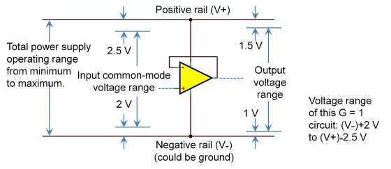
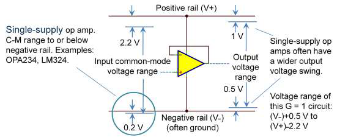
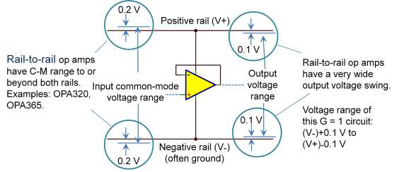
На рис. 1, 2 и 3 показан повторитель с G = 1. Важный момент: выходная способность примера на рис. 1 будет ограничена 2 В от отрицательной шины и 2,5 В от положительной шины из-за ограниченного синфазного диапазона входа. Чтобы получить полный выходной размах этого ОУ, нужно включить его с большим усилением.
Пример на рис. 1 типичен для ОУ, обычно используемого с двуполярным питанием. Его не назовут «однополярным», но он может работать и от однополярного питания, оставаясь в указанных диапазонах.
На рис. 2 показан так называемый однополярный ОУ. Его синфазный диапазон простирается до отрицательной шины и часто чуть ниже неё. Это позволяет использовать его в более широком классе схем, работающих вблизи земли. То есть ОУ, который не называют «однополярным», на самом деле можно использовать в некоторых однополярных схемах, но истинно однополярный тип универсальнее. В повторителе с G = 1 этот ОУ может обеспечить выходной размах 0,5 В от шины V– (ограничение по выходу) и 2,2 В от шины V+ (ограничение по синфазному диапазону входа).
На рис. 3 показан ОУ rail-to-rail («от шины до шины»). Он может работать с входным напряжением, равным обеим шинам питания или даже слегка выходящим за них. Выход rail-to-rail означает, что выходное напряжение может подходить очень близко к шинам — часто в пределах 10–100 мВ от шин питания. Некоторые ОУ заявляют только rail-to-rail выход, не обладая входными характеристиками, показанными на рис. 3. ОУ rail-to-rail очень часто используют с однополярным питанием 5 В и ниже, потому что они максимизируют диапазон сигнала при ограниченном напряжении питания.
ОУ rail-to-rail привлекательны тем, что ослабляют ограничения на диапазон сигнала, но они не всегда лучший выбор. Как и в других жизненных выборах, часто приходится чем-то жертвовать ради других характеристик. Но вы потому и аналоговый инженер. Ваша жизнь полна сложных задач и компромиссов — и вам это нравится!
Операционные усилители rail-to-rail чрезвычайно популярны и особенно полезны при низких напряжениях питания. Вы должны понимать, как реализуется rail-to-rail вход, и осознавать компромиссы.
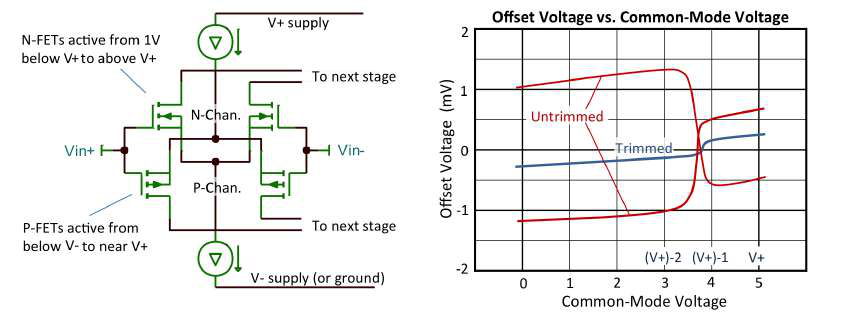
На рис. 4 показан типичный двухвходовый каскад rail-to-rail, содержащий пары N- и P-канальных транзисторов. P-канальные полевые транзисторы (FET) обрабатывают сигнал в нижней части диапазона синфазных напряжений вплоть до чуть ниже отрицательной шины (или земли при однополярном питании). N-канальные FET работают при синфазном напряжении вблизи положительной шины и чуть выше неё. Дополнительная схема (не показана) управляет «трафиком», определяя, сигнал какого входного каскада будет обрабатывать следующий каскад. Большинство ОУ TI с двухвходовым каскадом спроектированы так, что переключение происходит примерно в 1,3 В от положительной шины. Выше этого напряжения затворного напряжения для P-канального каскада уже недостаточно, и путь сигнала перенаправляется на N-канальный каскад.
P- и N-входные каскады имеют несколько разные напряжения смещения. Если синфазное напряжение проходит через эту точку переключения (что происходит при rail-to-rail работе с G = 1), это вызывает скачок смещения. Некоторые ОУ подстраиваются на заводе лазером или электронным триммингом, чтобы уменьшить смещение входных каскадов. Такая подстройка уменьшает скачок при переключении, но оставляет остаточную «ступеньку». Схема, управляющая переключением с P- на N-каскад, привязана к положительному напряжению питания, а не к земле. При питании 3,3 В переключение попадает в неудобную точку — середину диапазона питания.
В большинстве применений это остаётся незамеченным, но изменение напряжения смещения может стать проблемой, если требуется высокая точность. Также оно может вызывать искажения в цепях переменного тока (AC). Но ещё раз: искажения возникнут только тогда, когда синфазное входное напряжение пересекает точку переключения между каскадами.
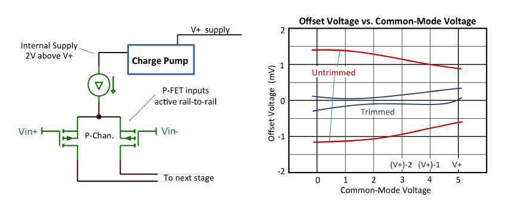
На рис. 5 показан второй тип входного каскада rail-to-rail. Внутренний зарядовый насос поднимает напряжение питания одиночного P-канального входного каскада примерно на 2 В выше положительной шины питания. Это позволяет одному входному каскаду работать бесшовно во всём диапазоне входных напряжений rail-to-rail — от ниже нижней шины до выше верхней — без глюка переключения.
«Зарядовый насос»… для некоторых разработчиков это звучит пугающе. Ведь они шумят, да? Но последние разработки TI на удивление тихие. Зарядовый насос потребляет очень малый ток, потому что питает только входной каскад. Никаких внешних выводов или конденсаторов не нужно — всё внутри. Шум зарядового насоса ниже уровня широкополосного шума; во временной области его редко видно. Однако в приложениях, где анализируют спектральный отклик ниже уровня широкополосного шума, могут быть заметны артефакты.
Не во всех приложениях нужен ОУ с rail-to-rail входом. Например, инвертирующие схемы или усилители с усилением больше единицы часто не требуют rail-to-rail входа, хотя и имеют rail-to-rail выход. Действительно ли вам нужен rail-to-rail вход? Многие инженеры предпочитают использовать их, чтобы не беспокоиться о выходе за пределы синфазного диапазона. Они используют один и тот же ОУ в разных точках системы: где-то нужен rail-to-rail вход, где-то нет. Какой бы выбор вы ни сделали, знание типов rail-to-rail и их компромиссов поможет выбрать более осознанно. Если сомневаетесь — задайте вопрос инженерам на форуме Precision Amplifiers в сообществе TI E2E™.
Вот несколько примеров ОУ:
Усилители rail-to-rail могут давать выходное напряжение очень близко к земле — но насколько близко? Я говорю о КМОП (CMOS) операционных усилителях, которые часто используются в низковольтных конструкциях, когда вы пытаетесь выжать максимальный выходной размах. Спецификации TI для таких приборов обычно выглядят примерно как таблица 1.
| Параметр | Условия | Мин | Тип | Макс | Ед. |
|---|---|---|---|---|---|
| Выход | |||||
| Размах выходного напряжения от обеих шин | RL = 10 кОм | 15 | 25 | мВ | |
| Размах выходного напряжения от обеих шин | RL = 2 кОм | 35 | 50 | мВ | |
Из таблицы 1 может показаться, что выход никогда не подойдёт к земле ближе чем на 15 мВ, а эти последние 15 мВ могут быть критичны для точных измерений от нуля. Но погодите: нужно внимательно интерпретировать все условия этой спецификации. Предположение в том, что нагрузка подключена посередине между выводами питания. Часто вверху таблицы спецификаций указано условие вроде: RL подключён к VS/2.
В этих заданных условиях усилитель должен втягивать ток через нагрузочный резистор, когда выход приближается к земле. Это отражает способ тестирования усилителя — проверку, что он может как отдавать, так и втягивать ток. Это разумный и консервативный способ тестирования, но что если ваша нагрузка подключена не так?
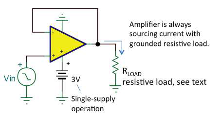
Предположим, ваша нагрузка подключена к земле, как на рис. 6. Тогда нагрузочный резистор сам помогает тянуть выход к земле, и усилителю не нужно втягивать ток. В этом случае большинство КМОП ОУ могут подойти к земле очень близко — в пределах одного-двух милливольт. В спецификации эта возможность может быть не отражена, но она намечена на рис. 7, где показан размах выходного напряжения в зависимости от выходного тока. График мог бы быть и подробнее, но видно, что выходное напряжение сходится к заданным шинам питания этого теста ±2,75 В. Для однополярного питания шина V– равна 0 В.
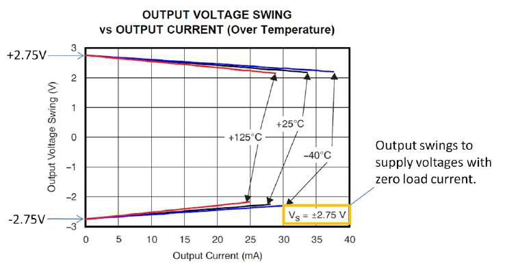
Теперь нужно сделать несколько оговорок. Обратите внимание на рис. 8: цепь обратной связи привязана к земле. Нужно учитывать все источники нагрузки на усилитель, а не только RL. В данном случае R1 + R2 фактически являются дополнительной нагрузкой на землю, параллельной RL.
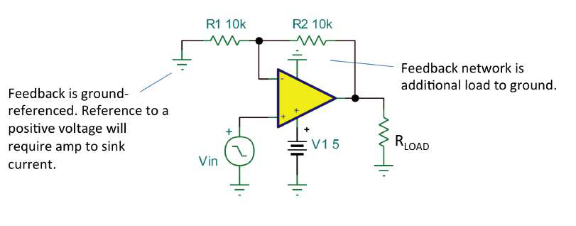
Но если R1 привязан к положительному напряжению, усилителю придётся втягивать ток, идущий через цепь обратной связи, когда выход приближается к 0 В. Тогда выход не сможет подойти к земле так же близко.
В этой же схеме при большом усилении на видимый выходной размах может повлиять напряжение смещения входа. Например, при G = 20, если напряжение смещения ОУ +1 мВ, то при нулевом входе на выходе будет 20 мВ. Это не ограничение выходного размаха — это вопрос напряжения смещения. Конечно, небольшое отрицательное входное напряжение выведет выход почти в 0 В, но в вашей схеме отрицательного входного напряжения может никогда и не быть.
Исключением могут быть сигналы переменного тока с реактивной нагрузкой. Ток и напряжение на реактивной нагрузке не совпадают по фазе, поэтому усилителю, возможно, придётся втягивать ток, когда выходное напряжение приближается к земле. (Это относится к КМОП ОУ; биполярные ОУ не могут подойти к земле так же близко.)
Низковольтные схемы с батарейным питанием — сложная штука, и кажется, мы постоянно боремся за максимальный размах. С хорошим пониманием возможностей ОУ вы, возможно, сможете выжать дополнительный размах вблизи земли. Если у вас есть вопросы по конкретному усилителю или конфигурации схемы, задайте их на форуме Precision Amplifiers в сообществе TI E2E.
Все знают, что такое напряжение смещения, верно? В простейшей схеме с G = 1 на рис. 9a выходное напряжение — это напряжение смещения операционного усилителя (ОУ). Напряжение смещения моделируется как источник постоянного напряжения (DC), включённый последовательно с одним входным выводом. При единичном усилении смещение передаётся прямо на выход с G = 1. В схеме с большим усилением (рис. 9b) выходное напряжение равно 1000·VOS. Верно?
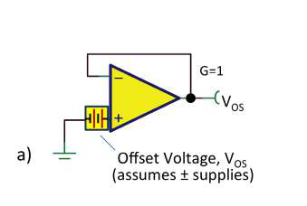
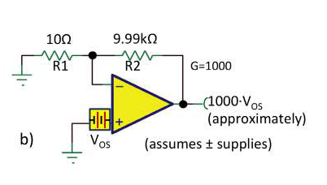
Ну, почти так, но не совсем. Понимание этого «не совсем» может помочь понять ошибки в ваших схемах на ОУ. В первом случае выходное напряжение было очень близко к середине диапазона питания (предполагая двуполярное питание). Это то выходное напряжение, при котором TI определяет и тестирует напряжение смещения. Но во втором случае выход может быть на несколько вольт в стороне, учитывая несколько милливольт смещения. Это требует небольшого дополнительного дифференциального напряжения на входе ОУ, чтобы создать выходной размах (в соответствии с усилением с разомкнутой петлёй этого конкретного усилителя).
Давайте посчитаем. Если усиление с разомкнутой петлёй по постоянному току равно 100 дБ, это составляет 1/10(100/20) = 10 мкВ/В. То есть на каждый вольт выходного размаха от середины диапазона входное напряжение должно измениться на 10 мкВ. Думайте об этом как о напряжении смещения, которое меняется вместе с выходным напряжением по постоянному току. При выходном размахе 9 В это изменение 90 мкВ. Может быть, в ваших схемах это незначительно, а может и нет.
Суть в том, что представление конечного усиления с разомкнутой петлёй как меняющегося напряжения смещения при изменении выходного напряжения даёт интуитивный способ оценить ошибку. И характер этой ошибки тоже может иметь значение. Для тестирования напряжения смещения и усиления с разомкнутой петлёй используется хитрая двухусилительная петлевая схема. С её помощью вы можете управлять выходным напряжением и измерять напряжение смещения. Если развернуть выходное напряжение по полному выходному диапазону, изменение напряжения смещения часто выглядит примерно как на рис. 10.
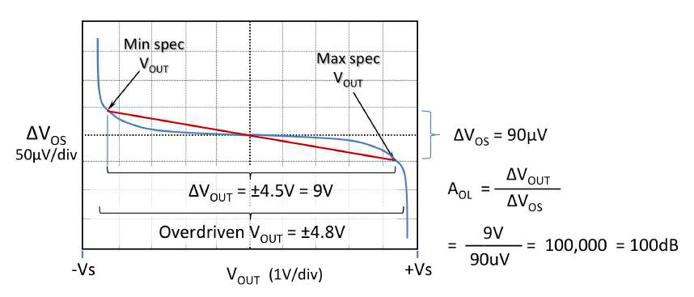
Обратите внимание: наибольшее изменение напряжения смещения обычно происходит на выходных краях, вблизи положительной и отрицательной шин. ОУ «напрягается», чтобы выдать максимальный выход. Инкрементальное усиление с разомкнутой петлёй выше в середине и падает там, где выход приближается к шинам. Планируя свои схемы, ожидайте именно этого. Напряжение смещения будет расти тем драматичнее, чем сильнее вы толкаете ОУ к пределам размаха.
Не все производители ОУ задают AOL одинаково. TI тестирует свои прецизионные ОУ по усилению с разомкнутой петлёй, усреднённому по generously заданному диапазону выходного размаха для хорошей линейной работы (красная линия на рис. 10). В таблице спецификаций это выглядит как таблица 2.
| Усиление с разомкнутой петлёй | Условия | Мин | Тип | Макс | Ед. |
|---|---|---|---|---|---|
| Усиление с разомкнутой петлёй AOL | (V–) + 0,5 В < VO < (V+) – 0,5 В, RL = 10 кОм | 100 | 120 | – | дБ |
| Усиление с разомкнутой петлёй AOL | (V–) + 0,5 В < VO < (V+) – 0,5 В, RL = 2 кОм | 96 | 116 | – | дБ |
Когда усилитель перегружен (создавая большее напряжение смещения), выход подойдёт ближе к шинам. Иногда выходной размах отличается от условий таблицы 2. Выходной размах в таблице 3, например, показывает выходное напряжение при перегруженном входе. Моя группа разработки ОУ в TI affectionately называла такую спецификацию «slam spec» (предельной) — это значит, что вход перегружают и выход «впечатывается» в шину так далеко, как только может.
| Выход | Условия | Мин | Тип | Макс | Ед. |
|---|---|---|---|---|---|
| Размах выходного напряжения от шин | RL = 10 кОм | 0,2 | 0,15 | – | В |
| Размах выходного напряжения от шин | RL = 2 кОм | 0,3 | 0,2 | – | В |
Оба типа спецификаций полезны в зависимости от требований вашего применения. Ключ — понимать и внимательно интерпретировать спецификации.
Не всегда очевидно, как напряжение смещения повлияет на схему. Смещение по постоянному току (DC) легко моделировать в SPICE, но макромодели операционных усилителей предсказывают эффект смещения только для одного экземпляра. А как насчёт разброса от прибора к прибору?
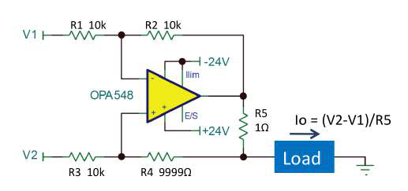
Улучшенный источник тока Хауленда (рис. 11) — хороший пример. Его обратная связь на оба входных вывода может оставить вас в недоумении: как входное напряжение смещения (VOS) ОУ вносит ошибку? OPA548 — мощный силовой ОУ с максимальным выходным током 5 А и питанием до 60 В. Его часто используют в схемах Хауленда. Но как его максимальное смещение 10 мВ повлияет на выходной ток схемы?
Перед моделированием — возможность проявить лучшие практики работы со SPICE. Как вы думаете, каков будет выходной ток при входном смещении 10 мВ? Напряжение смещения моделируется как источник напряжения, включённый последовательно с одним из входных выводов. Поэтому в SPICE можно просто включить DC-источник последовательно с одним из входов, чтобы имитировать varying смещение. При V1 и V2, подключённых к земле, в идеале ожидаешь нулевой выходной ток. Но смещение даст небольшой вход: DC-моделирование с VX = 0 и VX = 10 мВ. Отметьте изменение выходного тока из-за изменения VX (рис. 12). Могут быть и другие источники смещения, поэтому разница выходных токов при этих двух значениях VX показывает вклад именно напряжения смещения. Конечно, смещение может быть и отрицательным.
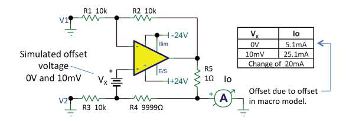
Выходное смещение при VX = 0 в модели происходит от напряжения смещения (2,56 мВ), заложенного в макромодель OPA548, — и не было бы дополнительным вкладом. Большинство макромодели TI имеют напряжение смещения, примерно равное типовому значению. В некоторых схемах другие источники выходного смещения могут возникать от входного тока и/или разностного входного тока и были бы дополнительным вкладом в общее смещение.
Какой выходной ток смещения вы предсказали? Улучшенный источник Хауленда — это, по сути, дифференциальный усилитель (четыре резистора вокруг ОУ) с добавленным резистором R5. Этот дифференциальный усилитель с единичным усилением (равные резисторы) прикладывает входную разностное напряжение (V2 – V1) к R5; возникший ток течёт в нагрузку. Однако напряжение смещения прикладывается непосредственно к неинвертирующему входу и усиливается в +2 раза — как в неинвертирующем усилителе (G = 1 + R2/R1). Таким образом, смещение 10 мВ создаёт 20 мВ на R5, давая смещение выходного тока 20 мА. Смещение –10 мВ создало бы выходной ток –20 мА (ток втягивается из нагрузки). Может быть, вы видите это интуитивно, а может и нет. В любом случае, SPICE даёт подтверждение.
В 2012 году мой коллега Суфиан Бендауд (Soufiane Bendaoud) опубликовал статью «Pushing the Precision Envelope» («Раздвигая пределы точности»). В ней он обсудил различные технологии, которые TI использует для подстройки («тримминга») напряжения смещения своих усилителей до очень низких значений. Это заставило меня задуматься о выводах подстройки смещения. Куда они делись?
Новейшие операционные усилители лишены выводов подстройки смещения, которые когда-то были практически у всех ОУ. В этой перемене много факторов. Более точные усилители с низким смещением, системы с автокалибровкой, давление в сторону снижения стоимости сборки и подстройки, крошечные корпуса для поверхностного монтажа — всё вместе сокращает использование выводов подстройки. Тем не менее у многих наших бестселлеров выводы подстройки есть, а знания и лучшие практики их использования (или неиспользования) постепенно забываются.
Тут всё просто: если выводы подстройки не используются, оставьте их неподключёнными (обрыв). Не подключайте их к земле.
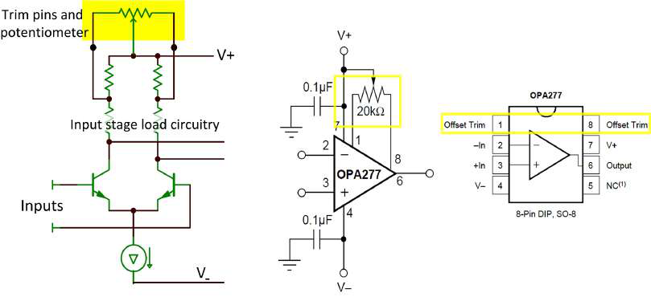
На рис. 13 показан распространённый тип внутренней схемы подстройки. Выводы подстройки подключены к отводам нагрузки входного каскада. Регулировка потенциометра разбалансирует нагрузку на плюс-минус несколько милливольт входного напряжения смещения. Даташиты обычно рекомендуют номинал потенциометра, но он не критичен. Слишком большое сопротивление потенциометра приведёт к тому, что изменение смещения будет происходить ближе к краям вращения. Слишком малое — уменьшит диапазон регулировки. Потенциометры от +100 % до 50 % рекомендованного значения, скорее всего, будут работать удовлетворительно.
Обратите внимание: схема подстройки в этом примере привязана к шине V+. У некоторых ОУ схема подстройки привязана к выводу V–. Подключение движка потенциометра не к той шине или к земле при двуполярном питании наверняка создаст проблемы. Некоторые разработчики пытаются управлять этими выводами хитрыми активными схемами. Это возможно, но схемы, привязанные к земле и подключённые к выводам подстройки, могут создать проблемы с подавлением пульсаций питания.
Использовать выводы подстройки лучше только для обнуления смещения первого усилителя в тракте сигнала. Обычно этот каскад имеет некоторое усиление, и его смещение доминирует в общем смещении тракта. Если использовать подстройку для коррекции других больших источников смещения в тракте, вы можете внести нежелательный температурный дрейф.
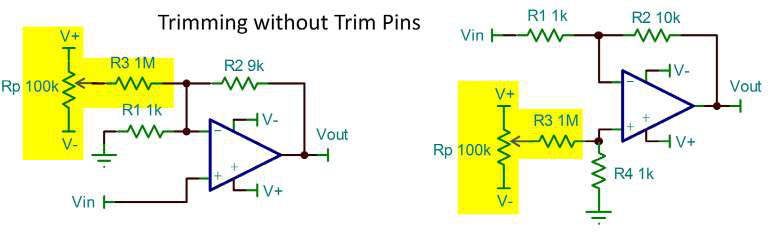
Если выводов подстройки нет, есть и другие способы обнулить смещение в системе. Можно вводить или суммировать переменные напряжения с потенциометра или другого управляющего сигнала в различных точках тракта. Примеры показаны на рис. 14. Показанные здесь напряжения подстройки должны быть получены от шин питания. Регулируемые источники питания, вероятно, достаточны. Нерегулируемые источники, такие как батареи, могут быть недостаточно постоянными или стабильными.
Улучшенное напряжение смещения современных усилителей часто устраняет необходимость в подстройке. И всё же иногда какой-то вид подстройки смещения требуется. Вы можете быть во всеоружии с методами — будь то выводы подстройки или дополнительная схема.
Помогая выбирать операционные усилители и инструментальные усилители, я часто слышу: «Мне нужно очень высокое входное сопротивление». Да неужели? Вы уверены? Редко бывает, что входное сопротивление (точнее, его активная составляющая) — действительно важный вопрос. (Входная ёмкость, реактивная часть полного входного сопротивления, — это другой вопрос.) Чаще всего нужен малый входной ток IB. Да, это связанные, но разные вещи. Давайте разберёмся.
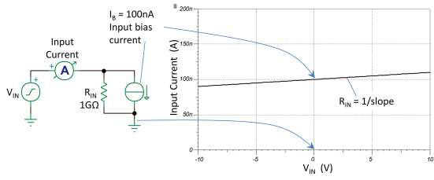
Простая модель одного входа — это параллельное соединение источника тока (входной ток) и входного резистора (рис. 15). Резистор заставляет входной ток меняться с входным напряжением. Входной ток — это входной ток при определённом входном напряжении, обычно посередине диапазона питания. Входное сопротивление — это мера изменения входного тока при изменении входного напряжения. Можно иметь ампер входного тока и при этом чрезвычайно высокое входное сопротивление.
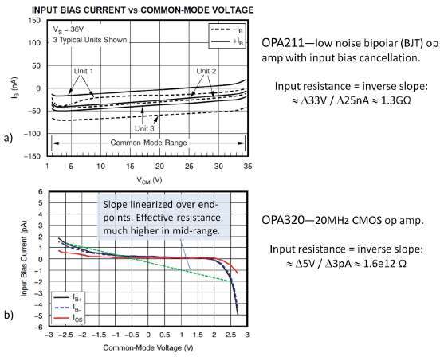
TI часто даёт типовые графики входного тока в зависимости от синфазного напряжения. Пару примеров показано на рис. 16; видно, что это не идеально прямая линия. Обратите внимание: OPA211 — это ОУ с биполярным (BJT) входом и компенсацией входного тока, которая значительно уменьшает входной ток — но он всё равно довольно высок. Входной ток и высокий токовый шум OPA211 делают его маловероятным выбором при сопротивлении источника больше 10 кОм, поэтому его входное сопротивление 1,3 ГОм редко является проблемой.
У КМОП ОУ OPA320 крошечный входной ток, в основном обусловленный утечкой входной схемы защиты от электростатического разряда (ESD). Эти токи утечки достигают максимума вблизи напряжений шин. КМОП и JFET входные усилители — обычно лучший выбор, когда требуется очень малый входной ток. Да, входное сопротивление у них высокое, но обычно это не определяющий фактор при выборе усилителя.
Входной ток может навредить в прецизионной аналоговой схемотехнике несколькими способами. Протекая через сопротивление источника или сопротивление цепи обратной связи, он может вносить IB·RS в напряжение смещения. Протекая в некоторых датчиках и химических ячейках, таких как pH-электроды, он может поляризовать электроды, создавая ошибки и даже нанося необратимый ущерб. Входной ток заряжает конденсатор интегратора, создавая нарастающий выход при нулевом входе.
В зависимости от чувствительности вашей схемы к входному току он может стать решающим фактором при выборе усилителя. Изучайте типовые графики изменения IB в зависимости от входного напряжения, ориентируясь на интересующий вас диапазон напряжений. Поведение при повышенной температуре может быть особенно важным для КМОП и JFET усилителей, так как их IB обычно резко растёт с ростом температуры.
КМОП (CMOS) и JFET входные операционные усилители часто выбирают за их малый входной ток (IB). Но история не исчерпывается одной строкой в таблице спецификаций — есть тонкости, о которых стоит знать.
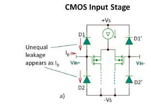
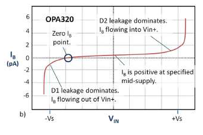
Затвор КМОП-транзистора (рабочий вход КМОП ОУ) имеет чрезвычайно малый входной ток. Но эти хрупкие затворы должны быть защищены от электростатического разряда (ESD) и электрической перегрузки (EOS) дополнительными схемами, которые и являются основным источником их входного тока. Эта защита обычно включает внутренние ограничительные диоды к шинам питания. Пример — OPA320, показанный на рис. 17a.
Эти диоды имеют малый ток утечки, порядка нескольких пикоампер. При входном напряжении вблизи середины диапазона питания их утечки достаточно хорошо согласованы, и остаётся лишь малая остаточная разностная ток менее 1 пА, которая и видна как входной ток усилителя.
Соотношение утечек двух диодов меняется, когда входное напряжение приближается к шинам питания. Например, вблизи нижней шины обратное напряжение D2 приближается к нулю и её утечка падает. Утечка D1 будет доминировать, вызывая больший входной ток, вытекающий из входного вывода. Конечно, при приближении входа к положительной шине питания происходит обратное. Входной ток задан и протестирован в средней точке, где утечки почти согласованы и довольно малы.
Результат — входной ток, меняющийся в зависимости от входного напряжения, как показано на рис. 17b. Для любого данного экземпляра существует входное напряжение, при котором входной ток равен нулю (если пренебречь значительными утечками корпуса или разводки платы). Фактически, с ОУ rail-to-rail часто можно самотестировать вход (рис. 18); выход будет дрейфовать к напряжению, соответствующему точке нулевого входного тока. Это интересный эксперимент, но не особенно полезная схема.
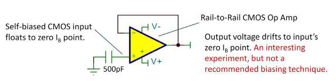
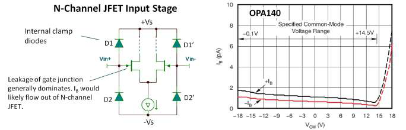
С JFET-входными усилителями, такими как OPA140 (рис. 19), картина может быть другой. Здесь затвор входного транзистора — это диодный переход, и его ток утечки часто является доминирующим источником входного тока. Затворный переход обычно больше и потому более «текуч», чем защитные диоды. Поэтому входной ток чаще однонаправлен. Он может меняться и зависит от усилителя.
Итак, что в итоге? Если в вашей схеме важен очень малый входной ток — будьте внимательны. Внимательно изучайте типовые графики, чтобы извлечь всю доступную информацию. Если вы работаете с входными напряжениями вблизи положительной или отрицательной шин, у вас может быть повышенный входной ток. Это подводит к ещё одному важному моменту — входной ток значительно увеличивается с температурой.
Это обсуждение применимо к большинству распространённых КМОП и JFET усилителей общего назначения, но существуют усилители специального назначения, разработанные для сверхмалого входного тока. Они используют хитрые схемы защиты с уникальными корпусами, чтобы достичь IB порядка 3 фА — на три порядка меньше, чем у приборов общего назначения. Примеры:
В разделе 8 я рассмотрел источник входного тока в КМОП и JFET усилителях — он возникает из утечки одного или нескольких обратно смещённых P-N переходов. Я закончил предупреждением, что эти утечки значительно растут с температурой.
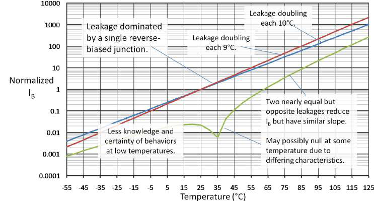
Обратная утечка P-N перехода имеет сильный положительный температурный коэффициент, приблизительно удваиваясь на каждые 10 °C. Это экспоненциальное нарастание быстро накапливается, как показано на нормированном графике на рис. 20. При 125 °C утечка возрастает примерно в 1000 раз по сравнению с комнатной температурой. Скорость нарастания может меняться в зависимости от характеристик диода, и удвоение тока может происходить в диапазоне от 8 °C до 11 °C. Этот повышенный ток при высоких температурах может стать значительной проблемой в некоторых схемах и может быть хорошей причиной выбрать FET или КМОП ОУ с очень малым входным током при комнатной температуре. В некоторых случаях при высоких температурах меньший IB можно получить с биполярным (BJT) ОУ, у которого нет такого драматического роста при высокой температуре.
При понижении температуры утечка обычно продолжает падать, но другие возможные источники утечки могут изменить поведение. Эти паразитные утечки могут иметь иные температурные зависимости. Честно говоря, о поведении ниже комнатной температуры известно меньше, потому что большая утечка при комнатной температуре и выше — более серьёзная проблема. Не стоит сильно полагаться на поведение значительно ниже комнатной температуры. Важной проблемой при низких температурах скорее является возможная конденсация влаги, которая может вызвать лавинообразный рост утечки.
Как обсуждалось в разделе 8, входной ток большинства КМОП ОУ обусловлен разностью утечек двух входных ограничительных диодов, подключённых к шинам питания. В идеально сбалансированном мире остаточная разность между двумя почти равными утечками по-прежнему имеет ту же экспоненциальную температурную зависимость, только начинается с меньшего начального значения. Полярность IB неопределённая; при небольших различиях в поведении диодов суммарный ток может проходить через ноль при какой-то температуре (логарифмический график показывает абсолютное значение без знака).
Итак, что в итоге? Если очень малый входной ток критичен для вашей схемы на FET ОУ, внимательно учитывайте его рост с температурой. Изучите все спецификации и типовые графики. Не размещайте чувствительные цепи вблизи источников тепла. При необходимости проводите собственные измерения. Для действительно критичных применений существуют усилители специального назначения со сверхмалым входным током — они достигают IB порядка 3 фА при комнатной температуре, на три порядка меньше приборов общего назначения. Примеры:
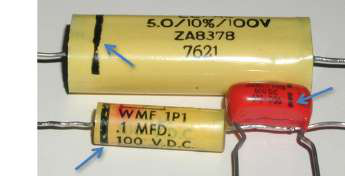
Добавляете ли вы резистор, чтобы согласовать сопротивления по постоянному току на входах ваших схем на ОУ? Посмотрите на схемы на рис. 22. Многих из нас учили добавлять Rb как «хорошую практику», делая его равным параллельному соединению R1 и R2. Давайте разберёмся, зачем нужен этот резистор и когда он уместен, а когда нет.
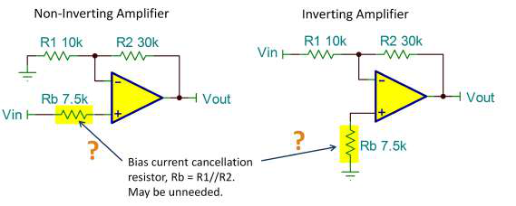
Назначение Rb — уменьшить напряжение смещения, вызванное входным током. Если оба входа имеют одинаковый входной ток, равные токи, протекая через равные сопротивления, создадут равные и противоположные напряжения смещения. Тогда входной ток не будет вносить вклад в напряжение смещения схемы. В некоторых случаях эта базовая идея оправдана. Но перед добавлением Rb — всегда ли это нужно?
Часто параллельное сопротивление R1 и R2 достаточно мало, а входной ток достаточно мал, чтобы смещение, созданное без Rb, было незначительным. Перед добавлением этого резистора посчитайте ошибку. Предположим для этого применения, что входной ток ОУ равен 10 нА. Без использования Rb входное напряжение смещения, вызванное входным током, будет:
(1) Входное напряжение смещения от IB = (10 нА)(7,5 кОм) = 75 мкВ
Повлияют ли 75 мкВ входного смещения на вашу схему? Часто ответ — нет, так зачем добавлять резистор? Учтите напряжение смещения используемого вами ОУ. Беспокоиться о 75 мкВ может быть бессмысленно, если, например, спецификация смещения вашего ОУ — 1 мВ. Так что сравните ошибку от входного тока со спецификацией напряжения смещения, прежде чем рутинно добавлять Rb в схему.
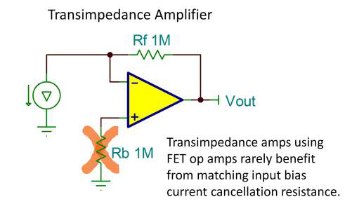
В трансимпедансных применениях часто используют большие сопротивления в цепи обратной связи для усиления очень малых токов (рис. 23). И здесь у вас может возникнуть соблазн добавить Rb, чтобы сбалансировать сопротивления на обоих входах. Но в таких применениях обычно используют FET- или КМОП-входные ОУ. С их очень малым входным током ошибка смещения обычно очень мала. Тепловой шум, создаваемый Rb, и возможный внешний шумовой фон на этом высокоимпедансном узле могут быть дополнительными причинами исключить Rb. Если ошибка от входного тока минимальна, зачем добавлять в схему возможный шум?
Иногда может быть явный и обоснованный случай для использования резистора компенсации входного тока. Но многие схемы не получают заметной выгоды, а могут и потерять в производительности.
В разделе 10 я рассмотрел использование резистора компенсации входного тока для балансировки сопротивлений источников на двух входах ОУ. Я пришёл к выводу, что эта практика часто не нужна и может даже навредить. Я закончил предыдущий раздел, сказав, что есть определённые ОУ, для которых эта практика определённо не рекомендуется: усилители с биполярными входными транзисторами, имеющие внутреннюю компенсацию входного тока.
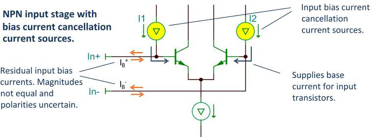
Их источники тока I1 и I2 питают базовые токи входной пары транзисторов (рис. 24). Эти токи получают зеркалированием тщательно согласованных базовых токов на входные выводы ОУ. Хотя эти токи точно согласованы с базовым током входного транзистора (обычно в пределах нескольких процентов), они не идеальны. Они оставляют малый остаточный входной ток, который может быть положительным или отрицательным. Остаточный ток может сильно отличаться на двух входных выводах. Они могут даже иметь противоположные полярности.
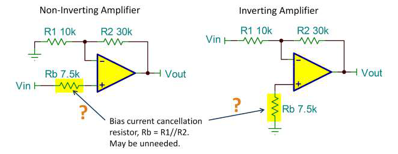
Любая возможная выгода от согласования сопротивлений источников (как на рис. 25) опирается на почти равные входные токи. Внутренняя компенсация входного тока делает эту практику бесполезной.
У каких ОУ есть внутренняя компенсация входного тока? Даташиты иногда не делают эту особенность очевидной. Однако эффект обычно раскрывается в деталях спецификации входного тока. На рис. 26a показана спецификация входного тока для OPA209 — малошумящего ОУ с компенсацией входного тока. Обратите внимание: перед входным током стоит символ ±, указывающий, что ток может течь в любом направлении — это первая подсказка. Также обратите внимание: спецификация разностного входного тока имеет ту же величину, что и входной ток (фактически они идентичны для этого ОУ). Эти спецификации выдают, что у прибора есть внутренняя компенсация входного тока.
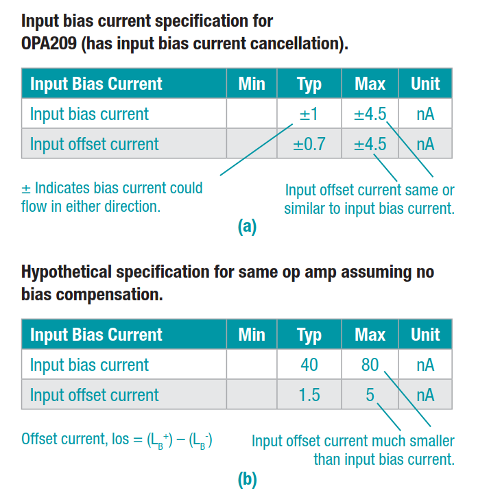
| Входной ток | Мин | Тип | Макс | Ед. |
|---|---|---|---|---|
| Входной ток | ±1 | ±4,5 | нА | |
| Разностный входной ток | ±0,7 | ±4,5 | нА |
На рис. 26b показана гипотетическая спецификация для OPA209 при допущении, что у него нет компенсации тока. Обратите внимание на гораздо больший входной ток. И теперь разностный входной ток намного меньше входного, потому что два входных тока почти равны. В зависимости от схемы и применения этот гипотетический ОУ мог бы выиграть от использования резистора компенсации входного тока, как показано на рис. 24.
| Входной ток | Мин | Тип | Макс | Ед. |
|---|---|---|---|---|
| Входной ток | 40 | 80 | нА | |
| Разностный входной ток | 1,5 | 5 | нА |
Внутренняя компенсация входного тока обычно встречается у прецизионных и малошумящих ОУ с биполярными (BJT) входами — тех, у которых иначе был бы некомфортно высокий входной ток. Внутренняя компенсация делает эти усилители полезными в более широком классе схем. Проектируете ли вы когда-нибудь схемы, полагающиеся на известную полярность входного тока? С этими компенсированными приборами так делать было бы неразумно, правда?
Диаграммы Боде — отличные аналитические инструменты, но они могут показаться неинтуитивными. Это чисто качественный взгляд на часто встречающиеся причины неустойчивости и самовозбуждения операционных усилителей.
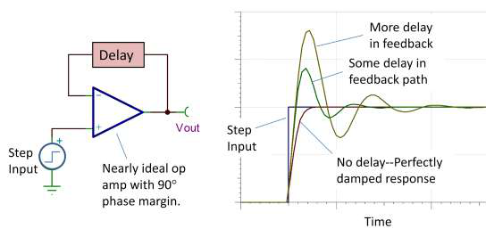
Идеально демпфированный отклик на рис. 27 возникает, когда нет задержки сигнала обратной связи, приходящего на инвертирующий вход. ОУ реагирует, наращивая выход к конечному значению, мягко замедляясь, когда сигнал обратной связи фиксирует приближение к нужному выходному напряжению.
Проблемы возникают, когда сигнал обратной связи запаздывает. С задержкой в петле усилитель не сразу обнаруживает свой прогресс к конечному значению. Он «переигрывает», мчась к нужному выходному напряжению слишком быстро. Обратите внимание на более быстрый начальный наклон при запаздывающей обратной связи. Инвертирующий вход не получает вовремя обратную связь о том, что он достиг и проскочил нужное выходное напряжение. Происходит выброс, и требуется несколько последовательно уменьшающихся коррекций полярности, прежде чем всё наконец установится. Немного задержки — и вы получаете лишь некоторый выброс и «звон». Слишком много задержки — и эти коррекции полярности продолжаются бесконечно — самовозбуждение.
Источник задержки — часто простая RC-цепь нижних частот. Ладно, это не постоянная задержка для всех частот, но плавный фазовый сдвиг этой цепи от 0° до 90° даёт приближение первого порядка для временной задержки: td = RC.
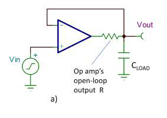
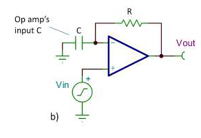
Есть две часто встречающиеся ситуации, когда эта RC-цепь непреднамеренно пробирается в схему. Первая — с ёмкостной нагрузкой (рис. 28a). Резистор — это выходное сопротивление ОУ с разомкнутой петлёй. Конденсатор — это, конечно, ёмкость нагрузки. Во втором случае (рис. 28b) RC-цепь образуют сопротивление обратной связи и входная ёмкость ОУ. Соединения на печатной плате тоже вносят ёмкость в этот чувствительный узел схемы. Обратите внимание: две схемы имеют идентичные петли обратной связи. Единственное отличие — узел, с которого снимается выход. С точки зрения устойчивости петли они могут создавать одни и те же проблемы. И эти две причины запаздывающей обратной связи часто встречаются в комбинации — немного того и другого может быть двойной неприятностью.
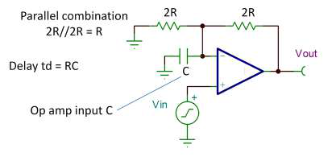
Второй случай требует немного больше комментариев: для простого повторителя с G = 1 резистор обратной связи не нужен, поэтому более распространённая ситуация — включение с усилением, использующее резистор обратной связи и резистор на землю (рис. 29). Параллельное соединение этих резисторов образует эффективное R в RC-цепи.
Анализ усилителей с обратной связью по Боде может дать больше. Тем не менее этот простой, интуитивный взгляд на то, как задержка или фазовый сдвиг в цепи обратной связи влияет на устойчивость, может помочь диагностировать и решить самые распространённые проблемы устойчивости.
В разделе 12 я рассмотрел две очень распространённые причины самовозбуждения или неустойчивости в схемах на ОУ. Конечная причина обеих — задержка или фазовый сдвиг в цепи обратной связи.
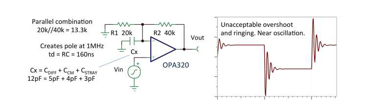
Простой неинвертирующий усилитель может быть неустойчивым или иметь чрезмерный выброс и «звон», если фазовый сдвиг или задержка, создаваемые входной ёмкостью ОУ (плюс некоторая паразитная ёмкость) во взаимодействии с сопротивлением цепи обратной связи, слишком велики (рис. 30). Вы можете достичь некоторых улучшений, уменьшив паразитную ёмкость в этом узле, минимизируя площадь дорожки печатной платы для этого соединения. Для данного ОУ входная ёмкость (дифференциальная плюс синфазная) — фиксированная величина, тут ничего не поделать. Однако можно пропорционально уменьшить сопротивления цепи обратной связи, сохранив то же усиление. Уменьшение сопротивлений сдвигает полюс, создаваемый этой ёмкостью, на более высокую частоту и уменьшает постоянную времени задержки. Уменьшение сопротивлений до 5 кОм и 10 кОм в этом примере — большое улучшение, но всё ещё даёт примерно 10-процентный выброс со звоном. Это также создаёт дополнительную нагрузку на ОУ, так что нельзя заходить в этом решении слишком далеко. Сумма двух резисторов — это нагрузка на ОУ, и вы не захотите, чтобы она была слишком малой.
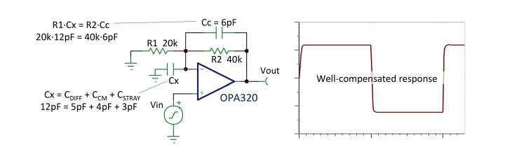
Лучшим решением, вероятно, будет конденсатор Cc, подключённый параллельно R2 (рис. 31). Когда R1×Cx = R2×Cc, делитель компенсирован, и отношение импедансов постоянно для всех частот. В цепи обратной связи не будет фазового сдвига или задержки.
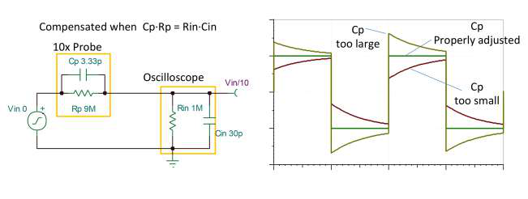
Можно уподобить цепь обратной связи компенсированному аттенюатору осциллографического щупа 10× (рис. 32). Это та же концепция. Переменный конденсатор в щупе позволяет подстроить так, чтобы две постоянные времени были равны. Обратите внимание: отклик этого щупа никогда не кажется неустойчивым, даже при неправильной подстройке. Почему? Потому что он не внутри петли обратной связи.
Так же, как вы можете подстроить один из конденсаторов в щупе для тонкой настройки компенсации, вам может понадобиться подстроить значение Cc, показанное на рис. 31. Вы можете не знать точно ёмкость Cx из-за неопределённых эффектов паразитной ёмкости. Кроме того, вы можете захотеть настроить отклик схемы под ваши требования, с небольшим выбросом для улучшения скорости и полосы пропускания.
Ещё одна распространённая причина неустойчивости — ОУ с ёмкостной нагрузкой. Опять же, эта ситуация создаёт фазовый сдвиг в петле (запаздывающую обратную связь), что и является корнем проблемы. Этот случай хитрее, потому что выходное сопротивление с разомкнутой петлёй — внутри ОУ. Через этот резистор нельзя подключить компенсирующий конденсатор. Фактически, это вообще не резистор; это эквивалентное выходное сопротивление схемы ОУ. Вспомните ваш последний самовозбуждающийся ОУ. Можете объяснить проблему через запаздывающую обратную связь?
Я рассматривал устойчивость операционных усилителей, изучая, как фазовый сдвиг (или назовём его задержкой) в цепи обратной связи может вызывать проблемы. Продолжая разделы 12 и 13: устойчивость с ёмкостной нагрузкой — хитрый случай.
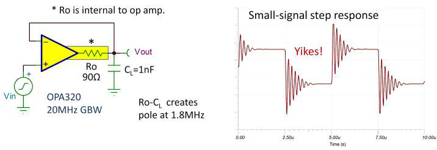
Виновник — выходное сопротивление ОУ с разомкнутой петлёй (Ro) — фактически не резистор внутри ОУ. Это эквивалентное сопротивление, зависящее от внутренней схемы ОУ. Изменить его нельзя, не изменив ОУ. CL — ёмкость нагрузки. Если вы хотите нагружать определённую CL, вы застреваете с полюсом, создаваемым Ro и CL. Полюс 1,8 МГц внутри петли обратной связи ОУ с полосой 20 МГц в G = 1 — это беда. Посмотрите на рис. 33.
Решения этой проблемы имеют общую тему — они замедляют усилитель. Подумайте: петля имеет фиксированную величину задержки от Ro и CL. Чтобы ужиться с этой задержкой, усилитель должен реагировать медленнее, чтобы не проскочить с перелётом желаемое конечное значение.
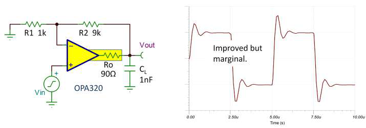
Хороший способ замедлить — включить ОУ с большим усилением. Большее усиление уменьшает полосу пропускания усилителя с замкнутой петлёй. На рис. 34 показан OPA320, нагружающий ту же ёмкость 1 нФ, но с усилением 10. Отклик на малый скачок драматически улучшился, но всё ещё на грани. Увеличьте усиление до 25 и более — и будет выглядеть довольно хорошо.
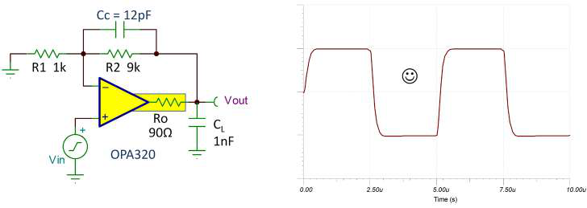
Но вот ещё один трюк. На рис. 35 всё ещё усиление 10, но с добавленным Cc, замедляющим всё немного больше и как раз нужным образом. Недостаточно Cc — и отклик больше похож на рис. 34. Слишком много Cc — и вы в беде, больше похоже на рис. 33. Получить эту компенсацию в самый раз — значит решить задачу «скорости замыкания» (rate-of-closure) — анализ по Боде. Немного интуиции помогает в этих проблемах, но если вы хотите выйти на следующий уровень компетенции в фазовой компенсации, вам понадобится мистер Боде. Мои коллеги Пит Семик (Pete Semig) и Колин Уэллс (Collin Wells) проделали отличную работу, дистиллировав тему устойчивости ОУ и анализа по Боде до сути.
SPICE (программа моделирования с акцентом на интегральные схемы) — полезный инструмент для проверки потенциальных проблем устойчивости схем. Вот один простой способ сделать это.
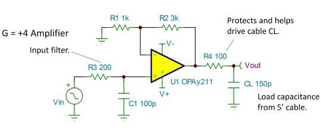
На рис. 36 показан неинвертирующий усилитель на OPA211 с парой небольших вариаций, распространённых во многих применениях. R3-C1 — входной фильтр. R4 — выходной резистор для защиты от злоупотреблений при подключении к внешнему миру. CL моделирует пятифутовый кабель.
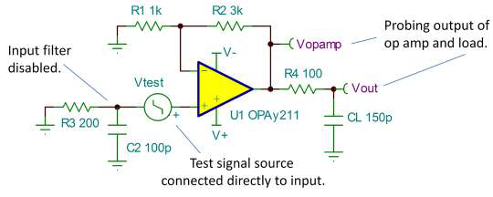
Проверка отклика на малый ступенчатый сигнал или прямоугольный импульс — самый быстрый и простой способ посмотреть на возможные проблемы устойчивости. На рис. 37 показана схема моделирования. Обратите внимание: входной вывод подключён к земле, а входной тестовый сигнал подключён непосредственно к неинвертирующему входу. Входной фильтр замедлил бы фронт ступенчатого сигнала. Если хотите узнать, как звонит колокол, ударьте по нему молотком, а не резиновым молоточком.
Отклик зондируется на выходе операционного усилителя, а не просто на узле VOUT схемы. R4 и CL фильтруют выходной отклик, так что VOUT не покажет истинный выброс ОУ. Для проверки устойчивости вы хотите знать, что делает ОУ. Обратите внимание: амплитуда приложенного скачка — 1 мВ (создавая скачок 4 мВ на выходе). Вам нужен отклик на малый сигнал. Большой входной скачок, вызывающий slew, даст меньший выброс и не выявит ясно потенциальную неустойчивость.
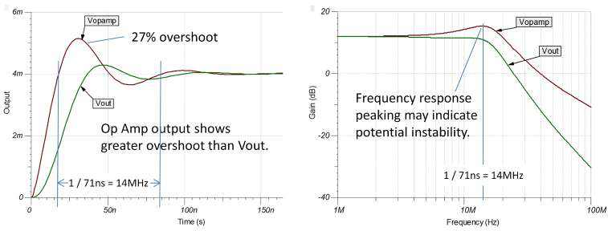
Моделирование показывает примерно 27-процентный выброс на выходе ОУ — слишком много, чтобы быть уверенным, что эта схема будет устойчива при всех условиях (рис. 38). Если предположить систему устойчивости второго порядка, этот выброс указывает на запас по фазе примерно 38 градусов. Также обратите внимание: частотный отклик показывает значительный пик амплитуды — ещё один признак потенциальной неустойчивости. Пик происходит на 14 МГц — обратной величине периода звона во временной области.
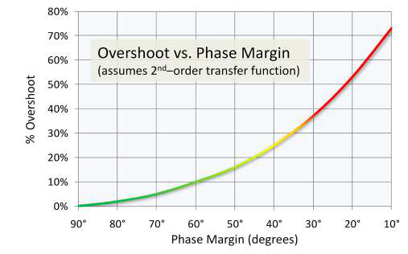
Общепринятая рекомендация для разумной устойчивости — запас по фазе 45 градусов (или больше), что соответствует выбросу 20 процентов (или меньше) (рис. 39). Есть более изощрённые анализы, которые можно сделать в SPICE — анализ по Боде с размыканием петли, нахождение запасов по фазе и усилению. Но для большинства относительно простых схем (петля обратной связи с одним ОУ) этот подход — очень хороший индикатор возможных проблем.
Конечно, любое SPICE-моделирование опирается на точность макромодели ОУ. Наши лучшие SPICE-модели отличные, но не идеальные. Кроме того, разброс схемы, неидеальные компоненты, паразитные параметры разводки печатной платы, плохая блокировка питания — всё может повлиять на схему. Поэтому вы её строите, тестируете, сравниваете с моделированием и оптимизируете. SPICE — полезный инструмент, ценный, но не идеальный. Покойный Боб Пиз (Bob Pease), настоящий аналоговый гуру, писал скептически об использовании SPICE — см. его блог «SPICE It Up!… но что говорит Боб Пиз?».
Спецификации входной ёмкости операционных усилителей часто путают или игнорируют. Давайте проясним, как лучше использовать эти спецификации. Входная ёмкость на инвертирующем входе может влиять на устойчивость схемы с ОУ, создавая фазовый сдвиг — задержку обратной связи, приходящей на инвертирующий вход. Цепь обратной связи взаимодействует с входной ёмкостью, создавая нежелательный полюс. Масштабирование импеданса цепи обратной связи относительно входной ёмкости — важный шаг для обеспечения устойчивого усилителя. Но какая ёмкость важна — дифференциальная? Синфазная? Обе?
Входная ёмкость ОУ обычно даётся в спецификации входного импеданса, показывающей как дифференциальную, так и синфазную ёмкость (таблица 4).
| Входной импеданс | Мин | Тип | Макс | Ед. |
|---|---|---|---|---|
| Дифференциальный | — | 100 МОм // 6 пФ | — | МОм // пФ |
| Синфазный | — | 6000 ГОм // 2 пФ | — | ГОм // пФ |
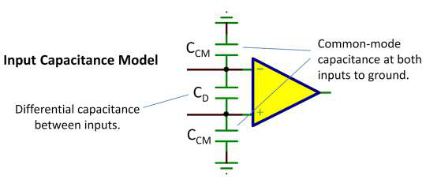
Входная ёмкость моделируется как синфазная ёмкость от каждого входа на землю и дифференциальная ёмкость между входами; см. рис. 40. Хотя у ОУ с двуполярным питанием нет подключения к земле, считайте синфазные ёмкости подключёнными к выводу питания V– — эквиваленту земли по переменному току (AC).
На высоких частотах, где устойчивость — проблема, ОУ имеет малое усиление с разомкнутой петлёй, и между двумя входами существует значительное AC-напряжение. Это заставляет дифференциальную ёмкость объединяться с синфазной ёмкостью инвертирующего входа, изменяя фазу сигнала обратной связи. Так что сложите две ёмкости, подключённые к инвертирующему входу. Включите оценку паразитной ёмкости монтажа (возможно, около 2 пФ). Эта полная ёмкость взаимодействует с параллельным импедансом цепи обратной связи (R1//R2), создавая полюс (рис. 41).
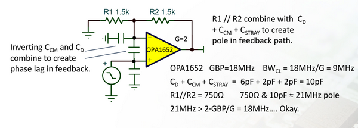
fполюса = 1 / ( 2π · (R1 // R2) · (Cдифф + Cсинф(инв) + Cмонт) )
Рекомендация: частота этого полюса должна быть больше чем в два раза выше полосы пропускания усилителя с замкнутой петлёй. Полюс на удвоенной полосе пропускания замкнутой петли уменьшит запас по фазе схемы примерно на 27°. Это обычно приемлемо для большинства схем с усилением в замкнутой петле два и больше. Применения с критичными требованиями к установлению или ёмкостными нагрузками могут потребовать ещё большего запаса. Уменьшите импеданс цепи обратной связи или рассмотрите добавление конденсатора параллельно резистору обратной связи R2.
Современные ОУ общего назначения часто имеют более широкую полосу — от 5 МГц до 20 МГц и выше. Сопротивления цепи обратной связи, которые могли быть приемлемы с ОУ на 1 МГц, теперь могут создавать проблемы — причина быть усердным при проверке устойчивости ваших разработок. SPICE-моделирование очень помогает в проверке чувствительности к входной ёмкости и импедансу обратной связи, и хорошие макромодели ОУ точно моделируют входные ёмкости. Проверка переходного отклика с входным скачком 1 мВ не должна вызывать чрезмерного выброса и звона. Но помните: реальность всегда выше рекомендаций и моделирования. Этот тип схем может потребовать тонкой подстройки на финальной разводке платы.
ОУ, устойчивые при единичном усилении, устойчивы в распространённой конфигурации G = +1, возвращающей 100 процентов выходного сигнала на инвертирующий вход. Хотя было бы неверно называть это действительно «худшим случаем» для устойчивости, можно разумно назвать это очень распространённым, капризным случаем.
Декомпенсированные ОУ имеют меньшие компенсирующие конденсаторы, что даёт более широкую полосу усиления (GBW) и более высокую скорость нарастания. Хотя более высокая скорость обычно требует большей мощности, тот же базовый ОУ может быть значительно быстрее, работая на том же токе. Но они не устойчивы при единичном усилении — их нужно использовать с шумовым усилением значительно больше единицы.
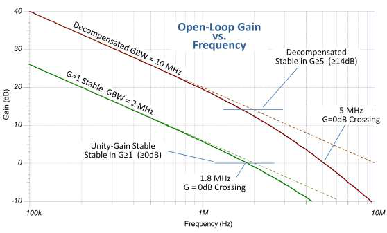
На рис. 42 показана критическая часть графика усиления от частоты для идеализированной пары ОУ. Декомпенсированная версия имеет впятеро большую GBW — 10 МГц против 2 МГц. Скорость нарастания получает тот же прирост. Обратите внимание: полоса единичного усиления ОУ, устойчивого при единичном усилении, чуть меньше его GBW — распространённое поведение. Полоса единичного усиления декомпенсированного усилителя — половина его GBW. Вам не следует эксплуатировать этот усилитель с шумовым усилением вблизи полосы единичного усиления, потому что второй полюс на 3 МГц сильно влияет на поведение усиления/фазы в этой области. Запас по фазе был бы плохим или нулевым.
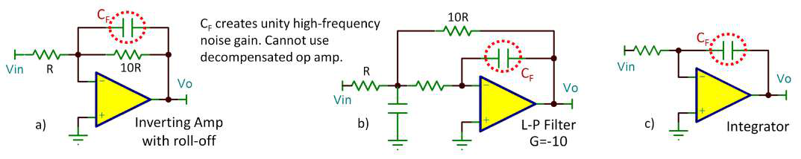
Декомпенсированные ОУ, кажется, окружены неким ореолом таинственности, оставляя некоторых пользователей в неуверенности, будут ли их схемы устойчивы. На рис. 43a показана распространённая ошибка. Хотя этот усилитель включён с усилением сигнала –10, конденсатор обратной связи заваливает отклик на высокой частоте. Этот конденсатор может быть виртуальным коротким замыканием на высокой частоте, где вопросы устойчивости важны — при единичном усилении. Можно использовать небольшой конденсатор обратной связи для компенсации цепи обратной связи для плоской АЧХ, но больший конденсатор, заваливающий отклик, наверняка создаст проблемы. Точно так же фильтр с многократной обратной связью на рис. 43b напрашивается на неприятности вне зависимости от усиления фильтра на низкой частоте. Интегратор (рис. 43c) — ещё одно применение, не подходящее для декомпенсированных ОУ.
TI улучшила свои конструкции ОУ. Теперь мы умнее, и у нас гораздо лучше технологические процессы интегральных схем (IC). С несколькими сотнями микроампер мы теперь можем сделать усилитель, который раньше требовал пары миллиампер. Так что иногда современный ОУ, устойчивый при единичном усилении, может быть очень близок к скорости/мощности старых декомпенсированных усилителей или даже превосходить их. Тем не менее декомпенсированный ОУ может быть лучшим решением для требовательного применения.
Позвольте прояснить: я не пытаюсь уговорить вас выбирать декомпенсированные ОУ вместо устойчивых при единичном усилении. У каждого свои достоинства, и вы «голосуете» своим выбором при проектировании. Какой бы выбор вы ни сделали, вы должны ясно понимать различия и проблемы. Если вы не уверены, помощь доступна на форуме Precision Amplifiers в сообществе TI E2E.
Вот несколько примеров пар декомпенсированных и устойчивых при единичном усилении ОУ:
ОУ, устойчивые при единичном усилении, устойчивы при усилении один и больше, но не меньше, верно? Что же делать (рис. 44)?
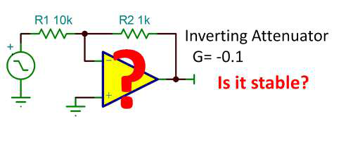
Ладно, вот короткий ответ: инвертирующий аттенюатор устойчив! Вы хотите знать почему, верно? Есть несколько способов посмотреть на этот вопрос, и быстрый взгляд может добавить ясности общим вопросам устойчивости.
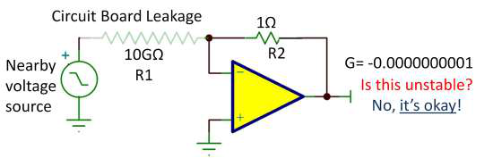
Рассмотрим так: если G = –0,1 был бы неустойчив, то ещё меньшее усиление должно быть ещё хуже, верно? Нарисуем схему: усилитель с единичным усилением с резистором обратной связи 1 Ом, показанный на рис. 45. Затем рассмотрим возможную утечку печатной платы, образующую входной резистор R1 = 10 ГОм. Это паразитный «входной сигнал», усиливаемый с очень малым инвертирующим усилением. Неустойчив ли он? Конечно, нет! Это просто повторитель с единичным усилением и практически без входа. Устойчив.
Думайте об устойчивости ОУ как о связанной с тем, сколько выходного сигнала возвращается на инвертирующий вход. Специалисты по устойчивости называют этот коэффициент обратной связи бета (β). При единичном усилении 100 процентов выходного напряжения возвращается на инвертирующий вход, так что β равна единице. Пример на рис. 45 по существу тот же, когда почти весь выходной сигнал возвращается на инвертирующий вход.
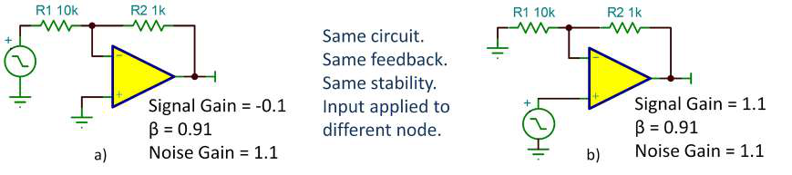
На рис. 46a показан инвертирующий усилитель, а на рис. 46b — неинвертирующий усилитель. Схемы одинаковы; входной сигнал просто приложен к разным узлам. Обе схемы возвращают одинаковое количество выходного сигнала на инвертирующий вход, поэтому их поведение по устойчивости одинаково. β одинакова.
Зануды по ОУ также используют термин «шумовое усиление» — так названное, потому что шум напряжения ОУ усиливается на выход этим коэффициентом. Это просто ещё один способ количественно оценить количество обратной связи. Схема с ОУ, склонная к самовозбуждению или неустойчивости, возбуждается собственным внутренним шумом, усиленным и поданным на инвертирующий вход. Инвертирующий усилитель (рис. 46a) имеет то же шумовое усиление β и, следовательно, то же поведение по устойчивости, что и его неинвертирующий собрат, хотя усиление входного сигнала отличается.
Существуют ли схемы с шумовым усилением меньше единицы? Бывает ли β больше единицы? Шумовые усиления меньше единицы и β больше единицы возникают, когда усиление включено внутрь петли обратной связи. Несколько усилителей в большей петле обратной связи, например в системе управления, могут столкнуться с этой проблемой. Это также происходит, когда транзистор (включение с общим эмиттером или общим истоком) включён внутрь петли обратной связи ОУ. Эти схемы могут иметь хитрые проблемы устойчивости.
Конечно, есть и другие возможные причины самовозбуждения или неустойчивости в инвертирующем аттенюаторе. Ёмкостная нагрузка, чрезмерно большие номиналы резисторов или слишком большая ёмкость на инвертирующем входе могут вызвать неустойчивость — но это не связано с базовой конфигурацией инвертирующего аттенюатора. Заблуждения об «опасностях» инвертирующего аттенюатора сохраняются. Расслабьтесь. Смоделируйте устойчивость в TINA-TI или вашей любимой SPICE-программе, чтобы убедиться. А если у вас есть сомнения или проблемы, проконсультируйтесь с экспертами на форуме Precision Amplifiers в сообществе TI E2E.
Не всегда очевидно, как произведение усиления на полосу (GBW) операционного усилителя может повлиять на ваши схемы. Макромодели имеют фиксированную GBW. Хотя вы можете заглянуть внутрь этих моделей, лучше с ними не возиться. Что же делать?
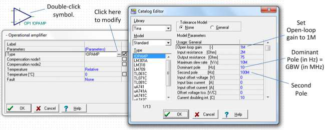
Вы можете использовать универсальную модель ОУ в SPICE, чтобы проверить ваши схемы на чувствительность к GBW. Большинство SPICE-симуляторов имеют простую модель ОУ, которую легко изменить. На рис. 47 показана одна в TINA-TI. Сначала установите её усиление с разомкнутой петлёй по постоянному току (DC) в 1 M (120 дБ). Затем частота доминирующего полюса (вводимая в герцах) создаст GBW усилителя в мегагерцах. В этом примере доминирующий полюс 10 Гц создаёт GBW 10 МГц.
На рис. 48 показан отклик с разомкнутой петлёй для трёх разных GBW: 5 МГц, 10 МГц и 100 МГц. Обратите внимание: эта простая модель также включает второй полюс (некоторые называют его «паразитным полюсом»). В некоторых случаях вы можете захотеть сделать этот второй полюс на очень высокой частоте, например 10 ГГц. Это создаст идеальный запас по фазе 90 градусов для любой разумной GBW. В этом примере я установил второй полюс на 100 МГц, равной наибольшей GBW, которую я моделирую. Вы можете видеть эффект этого второго полюса в отклике с GBW 100 МГц, заставляющий АЧХ разомкнутой петли загибаться вниз на 100 МГц. Это заставляет полосу единичного усиления втянуться до примерно 78 МГц, похоже на то, что вы могли бы увидеть с реальным ОУ с этой GBW. Полоса единичного усиления и GBW реального ОУ не обязательно одно и то же число.
Проекты активных фильтров могут быть хитрыми в оценке требований к GBW и являются хорошим случаем для использования этой техники. WEBENCH® Filter Designer, использованный для проектирования фильтра Чебышёва на рис. 49, даёт рекомендации по GBW, но его рекомендации могут быть более строгими, чем нужно в некоторых обстоятельствах. Для этого проекта он рекомендует GBW 100 МГц или больше для достижения почти идеальных характеристик фильтра. Я смоделировал проект, используя три GBW, показанные на рис. 48: 5 МГц, 10 МГц и 100 МГц. С этими результатами вы могли бы решить, что GBW меньше 100 МГц может быть удовлетворительна. Для финальных моделирований вы должны использовать макромодель ОУ, который вы выбрали.
Я использовал функцию пошагового изменения параметров в TINA-TI, варьируя доминирующий полюс для изменения GBW. Другие симуляторы имеют похожие возможности. Конечно, вы могли бы изменять параметры и вручную. В любом случае, варьирование GBW универсальной модели ОУ даст вам некоторое понимание её эффекта в ваших схемах.
Поведение операционных усилителей в режиме ограничения скорости нарастания (slewing) часто понимают неправильно. Это насыщенная тема, так что давайте разберёмся. Входная схема ОУ обычно имеет очень малое напряжение между входами — в идеале ноль, верно? Но внезапное изменение входного сигнала временно разбалансирует петлю обратной связи, создавая дифференциальное напряжение ошибки между входами ОУ. Это заставляет выход мчаться, чтобы исправить ошибку. Чем больше ошибка, тем быстрее он идёт; то есть до тех пор, пока дифференциальное входное напряжение не станет достаточно большим, чтобы ввести ОУ в режим ограничения скорости нарастания (slew).
Если входной скачок достаточно велик, педаль газа вдавлена в пол. Больший вход не заставит выход двигаться быстрее. (На рис. 50 показано, почему, на простой схеме ОУ.) При постоянном входном напряжении схемы с замкнутой петлёй напряжение между входами ОУ равно нулю. Входной каскад сбалансирован, и ток IS1 делится поровну между двумя входными транзисторами. При ступенчатом изменении VIN больше 350 мВ для этой схемы весь ток IS1 переключается на одну сторону входной транзисторной пары. Этот ток заряжает (или разряжает) корректирующий конденсатор Миллера C1. Скорость нарастания выхода (SR) — это скорость, с которой IS1 заряжает C1, равная IS1/C1.
Есть вариации, конечно. ОУ с улучшением скорости нарастания добавляют схему для обнаружения этого перегруженного состояния и привлечения дополнительных источников тока, чтобы заряжать C1 быстрее — но у них всё равно ограниченная скорость нарастания. Положительная и отрицательная скорости нарастания могут не идеально совпадать. Они почти равны в этой простой схеме, но это может меняться у разных ОУ. Напряжение, необходимое для ввода входного каскада в slew (350 мВ для этой конструкции), варьируется примерно от 100 мВ до 1 В и больше, в зависимости от ОУ.
Пока выход в режиме slew, он не может реагировать на инкрементальные изменения входа. Входной каскад перегружен, и скорость изменения выхода максимальна. Но когда выходное напряжение приближается к конечному значению, напряжение ошибки между входами ОУ снова входит в линейный диапазон. Тогда скорость изменения постепенно уменьшается, чтобы сделать мягкую посадку на конечное значение.
Нет ничего принципиально плохого в slew-режиме ОУ — никакого ущерба или штрафов за превышение скорости. Но чтобы избежать грубых искажений синусоид, вы должны ограничить частоту сигнала и/или амплитуду выхода так, чтобы максимальный наклон не превышал скорость нарастания усилителя. На рис. 51 показано, что максимальный наклон синусоиды пропорционален VP и частоте. При 20 процентах ниже необходимой скорости нарастания выход искажается в почти треугольную форму.
SRнеобх = 2π · f · VP
Большие прямоугольные сигналы с очень быстрыми фронтами наклоняются на нарастающем и спадающем фронтах в соответствии со скоростью нарастания усилителя. Финальная часть нарастающего или спадающего фронта будет закруглена, когда усилитель достигает диапазона малого сигнала, как показано на рис. 50. В неинвертирующей схеме минимальный скачок 350 мВ необходим, чтобы ввести этот ОУ в slew, вне зависимости от усиления.
На рис. 52 показано поведение slew для входного скачка 1 В с усилениями 1, 2 и 4. Скорость нарастания одинакова для каждого усиления. При G = 1 выходной сигнал переходит в поведение малого сигнала в последних 350 мВ. При G = 2 и G = 4 участок малого сигнала пропорционально больше, потому что сигнал ошибки, подаваемый на инвертирующий вход, ослабляется цепью обратной связи. Если включить с усилением больше 50, этот усилитель вряд ли войдёт в slew, потому что скачок 350 мВ перегрузил бы выход.
Скорость нарастания обычно задаётся в вольтах на микросекунду, возможно, потому что ранние ОУ общего назначения имели скорости нарастания порядка 1 В/мкс. Очень высокоскоростные усилители находятся в диапазоне 1000 В/мкс, но вы редко увидите это записанным как 1 кВ/мкс или 1 В/нс. Аналогично, наномощный ОУ может быть задан как 0,02 В/мкс, но редко как 20 В/мс или 20 мВ/мкс. Для некоторых вещей просто нет хорошей причины; это просто так, как мы делаем.
Время установления — это время, требуемое операционному усилителю, чтобы отреагировать на входной ступенчатый сигнал, а затем войти и оставаться в заданном диапазоне ошибки от конечного значения. Это важно в применениях, нагружающих аналого-цифровой преобразователь (АЦП), оцифровывающий быстро меняющиеся входы. Но давайте посмотрим за пределы определения и сфокусируемся на характере установочных кривых.
В разделе 20 я показал, как ОУ переходит из ramp-режима slew к участку установления малого сигнала; см. рис. 53. С ростом усиления вы можете видеть более медленное приближение к конечному значению. Это из-за уменьшенной полосы пропускания замкнутой петли при большем усилении. Этот пример ОУ настроен иметь практически 90 градусов запаса по фазе при G = 1. Обратите внимание: нет выброса даже при единичном усилении. Его практически идеальный отклик первого порядка служит эталоном для сравнения, но вы вряд ли найдёте ОУ с таким щедрым запасом по фазе при G = 1.
Отклик на рис. 54 более реалистичен (может быть, немного пессимистичен). Эти кривые получены с тем же ОУ, но с примерно 35 градусами запаса по фазе при G = 1. (Идеальные отклики ОУ также показаны для сравнения.) Его выброс малого сигнала составляет примерно 32 процента при G = 1. Кажется, что выброс меньше при показанном скачке 1 В, потому что только участок малого сигнала отклика производит это поведение с выбросом. Больший входной скачок имел бы тот же по величине выброс, но выглядел бы пропорционально ещё меньше. Поэтому вы всегда должны проверять выброс и устойчивость с малыми входными ступенчатыми сигналами.
На рис. 55 показан увеличенный вид отклика малого сигнала при G = 1. Обратите внимание: установление финальных горок к финальному стабильному значению, похоже, требует двух полных циклов вверх/вниз. Колебания продолжаются, всё меньше и меньше — за пределами разрешения этого графика. Может потребоваться ещё цикл или два для установления до высокой точности. Когда вы визуализируете это финальное поведение установления, вы можете вообразить сжатую шкалу времени в финальных перебросах/недобросах, как будто собственная частота этого звона сдвигается вверх с каждой горкой. Но каждый цикл установления требует того же времени. Чрезмерный звон может дорого стоить — хорошая причина выбрать достаточно хорошо ведущий себя ОУ.
Истинное время установления до высокой точности (16 бит и больше) часто включает другие факторы. Поведение, производимое более хитрыми техниками фазовой компенсации, и тепловые эффекты могут добавляться к времени установления. Усилитель может также возмущаться помехами от входной коммутации АЦП. Оптимизация всего этого может быть хитрым делом. Тем не менее важно визуализировать первичные эффекты — скорость нарастания в сочетании с откликом системы второго порядка.
Шумовые характеристики усилительных схем сильно зависят от шума Джонсона в резисторах: сопротивления источника и резисторов обратной связи. Почти все, кажется, знают, что резисторы имеют шум, но могут быть немного туманны в некоторых деталях. Вот краткий обзор в подготовку к будущим обсуждениям шума усилителей.
Модель шума резистора по Тевенену состоит из безшумного резистора последовательно с шумовым напряжением; см. рис. 56. Шумовое напряжение пропорционально корню из сопротивления, полосы пропускания и температуры (в кельвинах):
en = √( 4 · k · T · R · B ) [ВRMS]
TI часто количественно задаёт шум в полосе 1 Гц как его спектральную плотность. Теоретический шум резистора «белый», что означает, что он распределён равномерно по частоте. Он имеет равное шумовое напряжение в каждом равном кусочке полосы пропускания.
Шум в каждой полосе 1 Гц суммируется случайно согласно корню из суммы квадратов. Мы часто ссылаемся на спектральную плотность в вольтах/√Гц. Числовое значение то же, что и для полосы 1 Гц. Для белого шума удобно умножать на квадратный корень из полосы пропускания, чтобы просуммировать случайный вклад каждой полосы 1 Гц. Чтобы измерить или количественно оценить полный шум, вам нужно ограничить полосу пропускания (рис. 57). Без известной частоты среза вы не знаете, сколько шума вы интегрируете. Вы можете инстинктивно думать о спектральных графиках как имеющих логарифмическую ось частоты — диаграмму Боде. Обратите внимание: диаграмма Боде имеет больше герц полосы пропускания с правой стороны, чем с левой. Рассматривая полный шум, правая сторона диаграммы Боде может быть гораздо важнее левой.
Шум резистора также гауссов — описание его распределения амплитуд, функции плотности вероятности. Он гауссов, потому что создан суммированием несметного числа маленьких случайных событий. Центральная предельная теорема объясняет, как этот шум становится гауссовым. Среднеквадратичное (RMS) напряжение шума переменного тока равно ±1 σ распределения амплитуд (рис. 58). Для шума 1 В RMS существует 68-процентная (±1-σ) вероятность, что мгновенное напряжение будет в пределах диапазона ±1 В. Распространённое заблуждение — связывать или приравнивать белый и гауссов шум, но они не связаны. Фильтрованный шум резистора, например, не белый, но остаётся гауссовым. Двоичный шум определённо не гауссов, но он может быть белым. Шум резистора белый и гауссов.
Пуристы любят ворчать, что гауссов шум не имеет определённого значения пик-пик — оно бесконечно, говорят они. Справедливо — хвосты гауссова распределения простираются до бесконечности, так что любое напряжение возможно. Практически, вероятность шумовых выбросов за ±3 среднеквадратичных значения довольно мала. Многие используют приближение шести среднеквадратичных значений для значения пик-пик. Вы можете добавить большой дополнительный запас, используя восемь RMS, без значительного изменения значения.
Несколько весёлых пунктов для размышления: шумовые напряжения двух резисторов последовательно суммируются случайно, и результат — тот же шум, что и для суммы номиналов резисторов. Аналогично, шум резисторов параллельно даёт шум параллельного сопротивления. Если бы получалось иначе, это было бы проблематично: подумайте о разрезании физического резистора пополам и соединении их последовательно или параллельно. Но всё сходится. Большой резистор, лежащий на вашем столе, не будет искрить от неограниченного самогенерируемого шумового напряжения. Паразитная параллельная ёмкость ограничит полосу пропускания и полное напряжение. Аналогично, высокое шумовое напряжение, которое вы могли бы вообразить на изоляторах, шунтируется параллельной ёмкостью и сопротивлением проводников вокруг них.
Опираясь на обсуждение шума резисторов в разделе 22, давайте посмотрим на некоторые основы шума усилителей. Неинвертирующая конфигурация операционного усилителя наиболее распространена для малошумящих применений, так что я сфокусируюсь на ней.
Моделируя входной источник как источник шумового напряжения с последовательным сопротивлением (рис. 59), вы знаете, что сопротивление источника RS имеет шум, пропорциональный корню из его сопротивления (прямая линия на рис. 60). Цель малошумящего усилителя — вносить минимальный дополнительный шум к тому, что генерирует сопротивление источника. Шум усилителя моделируется как шум напряжения последовательно с одним входом и источники шумового тока, подключённые к каждому входу; см. рис. 59. Думайте о шуме напряжения просто как о временно меняющейся составляющей напряжения смещения. Аналогично, шумовой ток — это временно меняющаяся составляющая входного тока, по одной на каждом входе. Игнорируйте шумовой ток на инвертирующем входе в этой схеме — обычно вы можете сделать его вклад в шум минимальным.
На рис. 60 показан полный приведённый ко входу шум схемы для двух ОУ — биполярного (BJT)-входного OPA209 и JFET-входного OPA140. Каждый показан относительно шума сопротивления источника при 25 °C. Три источника шума суммируются корнем из суммы квадратов для каждого ОУ. Возможно, вы видели этот график в некоторых даташитах ОУ.
Когда сопротивление источника уменьшается, сопровождающий его шум Джонсона уменьшается (обратно пропорционально корню из сопротивления), и в некоторой точке доминирует шум напряжения усилителя. Полный шум выравнивается на значении, равном шуму напряжения усилителя. Когда сопротивление источника растёт, шумовой ток, протекая через сопротивление источника, создаёт шум, растущий линейно, поднимаясь более быстро и в конечном счёте превышая шум резистора источника. Так что при высоком сопротивлении источника доминируют эффекты шумового тока.
Наибольшие трудности в разработке малошумящего усилителя часто приходят с низким сопротивлением источника — 2 кОм и ниже. Низкий шум сопротивления источника в этой области требует усилителей с очень низким шумом напряжения. В общем, BJT-входные усилители преуспевают в этом диапазоне. Обратите также внимание: полный шум OPA209 на рис. 60 ближе всего подходит к шуму сопротивления источника в «сладкой точке». Это сопротивление источника с лучшей шумовой производительностью возникает при RS = VN/IN.
FET-входные усилители вносят мало дополнительного шума при сопротивлении источника выше примерно 20 кОм. Шумовой ток FET ОУ обычно не играет важной роли, пока вы не достигнете многогигаомных сопротивлений источника. Рекомендация: ниже 10 кОм сопротивления источника малошумящие BJT-усилители обычно дают меньший шум. Выше примерно 10 кОм FET или КМОП ОУ, вероятно, будут иметь преимущество.
Цепь обратной связи R1 и R2 также вносит шум, но обычно вы можете сделать это незначительным. Как? Короткий ответ: если параллельное соединение R1 и R2 составляет одну десятую от RS (или меньше), они добавят менее 10 процентов (<1 дБ) к полному шуму. Это верно вне зависимости от отношения резисторов, задающего усиление замкнутой петли. Шум компонентов обратной связи предполагается нулевым на рис. 60.
Конечно, нужно знать гораздо больше, но понимание этого частого случая — хорошее начало. Хотите больше? Я рекомендую «Operational Amplifier Noise: Techniques and Tips for Analyzing and Reducing Noise», написанную моим коллегой Артом Кэем (Art Kay). Пункт для размышления: OPA140 имеет очень широкий диапазон сопротивлений выше 10 кОм, где шумовая производительность отличная. Есть ли способ адаптировать более низкое сопротивление источника, чтобы воспользоваться этой областью работы?
В разделе 23 я исследовал шум неинвертирующего усилителя, но обошёл вопрос шумового вклада цепи обратной связи. Так что насчёт шума от R1 и R2 на рис. 61?
Шумовой вклад на инвертирующем входе включает тепловой шум резисторов обратной связи и шумовой ток операционного усилителя, взаимодействующий с компонентами R1 и R2. Вы можете вычислить выходной вклад этих источников шума, используя базовые предположения об ОУ:
Эти источники шума некоррелированы, поэтому они «складываются» корнем из суммы квадратов.
(2) en,вых = √( eR12·(R2/R1)2 + eR22 + (in·R2)2 )
Но есть более интуитивный способ посмотреть на это. Может быть удобно привести источники шума так, как если бы они все возникали на неинвертирующем входе. Выходные шумовые вклады делятся на неинвертирующее усиление. Этот подход приведения ко входу (RTI) облегчает сравнение источников шума с входным сигналом. Шум, возникающий на инвертирующем входе, связан с параллельным соединением R1 и R2. Приведённый к неинвертирующему входу, суммарный RTI-тепловой шум R1 и R2 равен тепловому шуму R1//R2. RTI-вклад шумового тока на инвертирующем входе равен IN×(R1//R2). Всё дело в R1//R2.
(3) en,RTI = √( 4kT·(R1//R2) + ( in·(R1//R2) )2 )
Этот результат выявляет важный фактор для малошумящей конструкции. Сделайте R1//R2 < RS, и шумовой вклад на инвертирующем входе пренебрежимо мал. Если R1//R2 = RS, тогда цепь обратной связи вносит шум, равный шуму сопротивления источника. Это может быть слишком для некоторых проектов.
При больших усилениях легко держать параллельное сопротивление низким — R1 можно сделать много меньше RS, а R2 большим. При умеренных усилениях становится труднее. G = 2 — худший случай, когда R1 и R2 равны. Если вы хотите сделать параллельное сопротивление 100 Ом, например, R1 и R2 должны быть 200 Ом. Цепь обратной связи тогда навязывает нагрузку 400 Ом на ОУ — слишком низко в большинстве обстоятельств. Становится легко снова очень близко к G = 1, когда R1 большой, а R2 малый. Этот случай не распространён, потому что вы обычно хотите значительное усиление в первом малошумящем каскаде.
Чтобы адресовать распространённое беспокойство: нет присущего шумового штрафа в том, чтобы сделать R2 высоким сопротивлением. Если вы можете достичь большего усиления, увеличивая R2 и уменьшая R1, поддерживая постоянное параллельное сопротивление, шумовая производительность остаётся постоянной.
Вы можете скачать Excel-файл для вычисления шума этого часто используемого входного усилительного каскада, включая шум ОУ и сопротивления источника. Он показывает процентный вклад каждого источника шума и графики полного шума в диапазоне сопротивлений источника. Он также вычисляет коэффициент шума — шум (в децибелах), который усилитель добавляет к тепловому шуму источника. Это удобная мера шумовой производительности усилителя. Поиграйте с ним, и вы быстро почувствуете вопросы и компромиссы.
Низкочастотная шумовая область один-на-f (1/f) усилителей кажется немного таинственной. Её также называют фликкер-шумом, как мерцающая свеча. Видимый на осциллографе с медленной развёрткой, он имеет блуждающую базовую линию (рис. 62), потому что высокочастотный шум ездит на более крупном низкочастотном содержимом. Розовый шум, другое метафорическое имя, также предполагает более сильный низкочастотный компонент. Фликкер-шум кажется вездесущим в физических системах и науках о жизни. Погодные/климатические паттерны, например, имеют компонент 1/f. Я не буду пытаться объяснить, почему он встречается в полупроводниках — глубокая тема!
Спектр фликкер-шума имеет номинальный наклон –10 дБ/декада, вдвое меньше, чем у одиночного RC-полюса. Обратите внимание: это квадрат напряжения (или мощность), который спадает со скоростью 1/f. Шумовое напряжение спадает как 1/√f. Фактический наклон может немного меняться, но это не сильно меняет его поведение или выводы. Измеренный спектр фликкер-шума обычно выглядит бугристым, с провалами и впадинами. Нужно усреднять за длительные периоды, чтобы получить достаточно гладкий график. Период шумового содержимого 0,1 Гц — 10 секунд, так что для хорошего измерения до 0,1 Гц нужно усреднить много 10-секундных периодов — пять минут или больше. Для данных 0,01 Гц — сходите на длинный обед. Если вы повторите измерение, оно, вероятно, будет выглядеть по-другому. Шум шумный, и шум 1/f кажется более шумным, чем большинство других шумов (я так и написал?).
Чтобы вычислить полный шум VB в полосе пропускания (от f1 до f2), интегрируйте функцию 1/f, что приводит к натуральному логарифму отношения частот f2/f1:
(4) VB = va · √( ln(f2/f1) ) где va — спектральная плотность фликкер-шума в точке на частоте fa.
Пункты для размышления:
Шум усилителя — это комбинация шума 1/f и плоского (белого) шума. Плоский шум продолжается на низкой частоте, но шум 1/f доминирует (рис. 63). Шум 1/f продолжается на высокой частоте, но плоский шум доминирует. Два сливаются на частоте среза, складываясь случайно и давая увеличение на 3 дБ. Шум усилителя суммируется в полосе f1–f2 интегрированием шума 1/f и плоского шума отдельно по полосе пропускания, а затем комбинируется корнем из суммы квадратов.
Другие пункты для размышления:
Усилители с биполярными (BJT) входными каскадами (OPA211) обычно имеют меньший шум 1/f, но новые поколения технологических процессов аналоговых интегральных схем значительно улучшили JFET и КМОП транзисторы. Операционные усилители OPA140 (JFET) и OPA376 (КМОП), например, имеют частоты среза 10 Гц и 50 Гц соответственно. Чопперные усилители практически устраняют шум 1/f коррекцией изменений напряжения смещения.
Чопперные операционные усилители предлагают очень низкое напряжение смещения и драматически уменьшают низкочастотный шум 1/f (фликкер). Как они это делают?
На рис. 64 показан входной каскад чопперного ОУ. Усилитель — относительно обычный каскад крутизны (транскондуктивности) с дифференциальным входом и дифференциальным выходным током. Чоппирование достигается коммутирующими переключателями на входе и выходе, которые синхронно реверсируют полярность. Поскольку и дифференциальный вход, и выход реверсируются одновременно, чистый эффект на выходной конденсатор C1 — постоянная полярность тракта сигнала.
Напряжение смещения каскада крутизности — внутри входной коммутирующей сети, так что его вклад в выход периодически реверсируется выходными переключателями. Выходной ток, вызванный напряжением смещения, заставляет напряжение на C1 нарастать и спадать с равной скоростью. Внутренняя логика обеспечивает равные времена нарастания и спада, так что среднее выходное напряжение на C1 равно нулю. Таким образом, нулевое смещение!
Чопперы ранних поколений обеспечивали лишь скромную фильтрацию треугольного шума чоппирования, что сделало их известными как дико шумные приборы, используемые только когда очень низкое напряжение смещения было критично. (И вот так появились большие шумные мотоциклы.) Особенно неприятно было то, что напряжение смещения до чоппирования определяло величину треугольной кривой, так что шум чоппирования мог значительно меняться от экземпляра к экземпляру.
Чопперы нового поколения драматически тише, включая фильтр на переключаемых конденсаторах с несколькими выемками (notch), выровненными с частотой чоппирования и её нечётными гармониками. Это достигается интегрированием заряда на C1 за полный цикл перед передачей его заряда на следующий каскад ОУ. Интегрированный за полный цикл вверх-вниз, его чистое значение равно нулю — идеально усреднено. В частотной области это создаёт отклик фильтра sinc(x), или sin(x)/x, с нулями, которые точно выровнены с основной частотой и всеми гармониками треугольной волны (рис. 65).
В финальной реализации восемь переключателей в выходной коммутирующей сети поочерёдно заряжают два конденсатора C1. Это позволяет интегрировать входной сигнал на одном конденсаторе, в то время как заряд на другом конденсаторе передаётся на следующий каскад ОУ. Поскольку шум 1/f (фликкер) — лишь медленно меняющееся во времени напряжение смещения, чопперы практически устраняют это увеличение спектральной плотности шума в низкочастотном диапазоне. Чоппирование смещает основной сигнал на частоту чоппирования, за пределы области 1/f входного каскада. Таким образом, низкочастотный диапазон сигнала чоппера имеет спектральную плотность шума, равную той, что у усилителя в высокочастотном диапазоне.
Я сделал так, что всё это звучит аккуратно и чисто. Нулевое смещение… идеально! Конечно, всё ещё есть некоторая остаточная ошибка смещения, производимая инжекцией заряда переключения и рассогласованием ёмкостей и паразитных параметров. Усиление входного каскада значительно уменьшает смещение, вносимое последующими каскадами ОУ. В общем, более широкая полоса пропускания усилителя требует более быстрого чоппирования, что увеличивает остаточные ошибки смещения. Остаточное смещение имеет тенденцию быть очень стабильным с температурой и в течение срока службы прибора — важный атрибут для этих приборов.
Теперь я не утверждаю, что современные чопперные ОУ устраняют потребность в стандартных ОУ: далеко не так. Но чопперы нового поколения теперь полезны в гораздо более широком диапазоне применений. Они обеспечивают очень низкое и стабильное напряжение смещения, практически без фликкер-шума, и поведение, очень близкое к поведению стандартного ОУ.
Все знают, что у ОУ должны быть блокировочные конденсаторы по питанию, расположенные вблизи выводов микросхемы, верно? Но почему? Почему, например, усилитель более склонен к самовозбуждению без правильной блокировки? Причины увеличат ваше понимание и осведомлённость.
Подавление источника питания — это способность усилителя отклонять вариации напряжения источника питания. На рис. 66, например, показано, что эта способность подавления очень хороша на низкой частоте, но уменьшается с ростом частоты. Так что подавление хуже на высокой частоте, где происходит самовозбуждение.
Мы часто думаем о внешнем шуме от источника питания, мешающем усилителю. Но ОУ могут создавать свои собственные проблемы. Например, ток нагрузки выхода должен приходить от выводов источника питания. Без правильной блокировки импеданс на выводе питания может быть высоким. Это позволяет переменному (AC) току нагрузки создавать AC-напряжение на выводе питания. Это создаёт непреднамеренный, неконтролируемый путь обратной связи. Индуктивность в этом соединении источника питания может увеличивать результирующее AC-напряжение на выводе питания. На высокой частоте, где подавление источника питания плохое, эта непреднамеренная обратная связь может вызвать самовозбуждение.
Есть и внутренние силы в работе. Без твёрдого источника питания внутренние узлы схемы могут «разговаривать» друг с другом, создавая нежелательные пути обратной связи. Внутренняя схема разработана работать с твёрдым, низким импедансом на выводах источника питания. Усилитель может вести себя совсем по-другому и непредсказуемо без твёрдой базы низкоимпедансных источников питания.
При чистом синусоидальном входе непреднамеренная обратная связь из-за плохой блокировки может быть не аккуратной синусоидой. Токи сигнала в выводах питания, рис. 67, часто сильно искажены, потому что они представляют только половину тока синусоиды. С разными характеристиками подавления источника питания на положительном и отрицательном питании суммарный эффект будет искажать выходную форму сигнала. Проблемы увеличиваются с высоким током нагрузки. Реактивные нагрузки создают фазосдвинутые токи нагрузки, которые могут обострять проблемы. Ёмкостные нагрузки уже подвержены более высокому риску самовозбуждения из-за дополнительного фазового сдвига в цепи обратной связи. Эти случаи с более высоким риском могут требовать блокировочных конденсаторов большего номинала (танталовых) и дополнительного внимания к разводке схемы — компактной и прямой.
Конечно, не все плохо заблокированные усилители самовозбуждаются. Может не быть достаточной положительной обратной связи, или фаза не совсем правильная (или неправильная!), чтобы поддержать самовозбуждение. Тем не менее производительность может быть скомпрометирована. Частотный и импульсный отклик могут быть затронуты с чрезмерным выбросом и плохим временем установления. Это поведение плохо моделируется в TINA-TI или другой SPICE-программе. Источники напряжения в SPICE идеально твёрдые, невозмущаемые токами нагрузки. Моделирование фактического импеданса источника вашего питания и разводки платы дополнительными компонентами хитро и неточно. Величина подавления источника питания моделируется в наших лучших макромоделях, но фазовое соотношение этого пути обратной связи вряд ли будет соответствовать реальности. Моделирование может быть чрезвычайно полезным, но не предскажет точно это поведение.
Всё это не должно вызывать у вас паранойю — не нужно сходить с ума с блокировкой. Просто будьте бдительны к особенно чувствительным ситуациям и признакам потенциальных проблем. Хороший аналоговый дизайн процветает со здоровой дозой понимания и осведомлённости.
Когда я говорю о неиспользуемых ОУ, я не имею в виду ОУ в вашей коробке с компонентами. Те должны быть в антистатических пакетах или токопроводящем поролоне. А что насчёт того, что на вашей печатной плате — неиспользуемого ОУ в счетверённом или сдвоенном корпусе?
Лучше всего подключить ОУ в реальную схему ОУ с обратной связью (рис. 68). Повторитель с единичным усилением — очевидный выбор, так как дополнительных компонентов не требуется (изображение справа). Затем подключите вход к напряжению в пределах его линейного диапазона входа и выхода. Подключения (или разомкнутые входы), которые потенциально могут перегрузить вход, выход или оставить усилитель в неопределённом шумном состоянии, нежелательны (изображение слева).
Совет по разводке печатной платы: позиционируйте любые неиспользуемые ОУ на возможные будущие модификации. Вы можете найти применение запасному ОУ в редизайне или будущей версии продукта. Думайте наперёд. Сделайте подключения к запасному ОУ на верхнем и нижнем слоях печатной платы, где небольшая «хирургия» может легко протестировать ваши изменения. Вы можете даже предусмотреть позиции разводки для компонентов обратной связи с дорожками к узлам фиксации, которые могут быть легко разрезаны.
Вы можете избежать всех этих проблем полностью, выбрав тип усилителя, который имеет одиночные, сдвоенные и счетверённые версии — OPA322 один из примеров. Это может позволить оптимизированную разводку печатной платы без «сирот», используя ОУ с теми же спецификациями и поведением.
Слово утешения для тех, кто мог не использовать предпочтительный метод фиксации неиспользуемого усилителя: вы вряд ли сильно потревожите работающий(е) ОУ в том же корпусе. Хотя вы можете тянуть некоторый дополнительный ток в неиспользуемом усилителе, ваша система вряд ли рухнет и сгорит. Большинство современных ОУ имеют независимую схему смещения, невозмущаемую перегрузками в других каналах на том же кристалле. Если ваши схемы работают, расслабьтесь и следуйте лучшим практикам в вашем следующем проекте.
Предоставляя чувствительный входной вывод усилителя внешнему миру, разработчики удивляются, что кто-то может подключить к нему или как с ним могут обращаться. Будут ли с ним обращаться осторожно, или могут беспечно воткнуть его в сеть переменного тока (AC)? Мы все хотели бы сделать наше оборудование надёжным, способным выдержать самое жестокое обращение, так что я объясню, как защитить от электрической перегрузки (EOS).
OPA320 типичен для большинства ОУ. Абсолютные максимальные рейтинги описывают максимальное напряжение источника питания и максимальное напряжение и ток входного вывода (рис. 69). Сопроводительное примечание указывает, что если вы ограничите входной ток, вам не нужно ограничивать входное напряжение. Внутренние ограничительные диоды безопасны до ±10 мА. Однако ограничение тока при высоковольтных перегрузках может потребовать высокого последовательного входного сопротивления, увеличивая шум, уменьшая полосу пропускания и возможно создавая другие ошибки.
Ограничительные диоды начинают проводить, когда входное напряжение превышает шины на 0,6 В или около того. Многие приборы могут типично выдерживать больший ток, но прямое напряжение увеличивается драматически — увеличивая шанс повреждения. Вы можете значительно улучшить переносимость более высоких токов неисправности и увеличить уровень защиты, добавив внешние диоды. Распространённые сигнальные диоды, такие как вездесущий 1N4148, типично имеют значительно меньшее прямое напряжение, чем внутренние ограничительные диоды. В лабораторных тестах я обнаружил, что различные диоды 1N4148 из нашего ящика все имели прямые напряжения по крайней мере на 100 мВ ниже, чем внутренние ограничители на наших усилителях. Подключённые параллельно с внутренними, большая часть тока неисправности потечёт во внешнем диоде. Диоды Шоттки имеют ещё меньшее прямое напряжение и могут обеспечить улучшенную защиту. Недостаток — они имеют тенденцию быть очень «текучими». Спецификации тока обратной утечки обычно микроампер или больше, и это при комнатной температуре. Утечка растёт с температурой.
Будьте бдительны… вам нужно твёрдое напряжение источника питания. Ограничительные диоды, внутренние или внешние, полагаются на относительно стабильное напряжение источника питания, чтобы ограничивать стресс. Если виновный импульс неисправности может сбросить достаточно тока в шину источника питания, поднимая (или опуская, на V–) источник питания, это может перегрузить вывод напряжения питания (рис. 70). Типичный положительный линейный регулятор не может втягивать ток и на него нельзя положиться в удержании стабильного напряжения. Большие блокировочные конденсаторы по питанию могут помочь поглотить большой импульс тока неисправности. Устойчивый ток неисправности может потребовать стабилитрона на источнике питания. Используйте стабилитрон чуть выше максимального напряжения источника питания, чтобы он проводил только во время неисправности. Обратите внимание: при ±питаниях вам понадобится эквивалентная защита на отрицательной стороне.
Эти меры всё ещё могут привести к напряжениям за пределами номинальных максимальных значений, но вот в чём суть: абсолютные максимальные рейтинги обычно очень безопасны, и повреждение при этих напряжениях или токе чрезвычайно маловероятно. Обычно есть значительный запас за пределами этих рейтингов, где повреждение всё ещё довольно маловероятно (но без обещаний). Гораздо проще ограничить на пару вольт за пределами этих рейтингов, и вы всё равно, вероятно, достигнете высокой выживаемости. Во многих случаях цель — драматически улучшить выживаемость без больших затрат или компромиссов в производительности.
Невозможно рекомендовать универсальное решение или гарантировать, что конкретная схема защиты удовлетворит ваши потребности, потому что детали применений сильно различаются. Усилители различаются по чувствительности, и необходимый уровень защиты драматически различается. Пожертвуйте несколькими усилителями в тестах на жестокость, если необходимо.
В одном из моих постов я писал об использовании операционных усилителей в качестве компаратора, и мы посмотрели на эффект, который внутренние дифференциальные входные ограничительные диоды могут иметь на эти ОУ. Я поставил вопрос: «Могут ли эти ограничители влиять на схемы с ОУ?» У ОУ должно быть около нуля вольт между двумя входными выводами, верно? Так что эти диоды никогда не будут прямо смещены в нормальных схемах с ОУ… или будут?
В этом обсуждении мы будем говорить о дифференциальных ограничительных диодах, которые могут присутствовать в некоторых ОУ (рис. 71). Эффект в схемах с ОУ часто виден в базовых неинвертирующих усилительных конфигурациях, включая простой повторитель с G = 1. Рассмотрим положительно идущий входной скачок. Выход не может немедленно следовать за резким изменением входного напряжения. Если входной скачок больше 0,7 В, D1 будет проводить, возмущая неинвертирующий вход. В течение этого периода, когда ОУ slew-ит к своему новому выходному напряжению, ток во входном выводе ОУ подскочит до гораздо большего значения (рис. 72). В конце концов, когда выход «догонит» вход, всё снова будет хорошо.
Многие применения обрабатывают по существу медленные или ограниченные по полосе сигналы, значительно ниже скорости нарастания ОУ, так что это поведение никогда не возникнет. В других применениях, даже с быстро меняющимся входным напряжением, переходный процесс тока входного вывода не влияет негативно на работу схемы. Но в некоторых особых случаях импульс входного тока может вызвать проблемы. Одна примечательная ситуация — в мультиплексированной системе сбора данных; упрощённый случай, показывающий только два входных канала, показан на рис. 73.
В этом примере, когда мультиплексор переключается с канала 1 на канал 2, выход U1 должен быстро slewing-ить от –5 В к +5 В. D1 прямо смещается, и результирующий переходный входной ток проходит через переключатель мультиплексора, разряжая напряжение на C2. RC-входные фильтры часто используются для удержания стабильного напряжения во время переключения каналов, но импульс тока частично разряжает C2. Теперь потребуется дополнительное время для перезарядки C2 до правильного входного напряжения; таким образом, замедляя возможную скорость мультиплексирования или уменьшая точность.
Решение — использовать ОУ без дифференциальных ограничителей для U1. FET-входной усилитель, такой как OPA140, имеет низкий входной ток (чтобы не нагружать последовательное сопротивление MUX) и не имеет дифференциальных входных ограничителей. Это отлично для мультиплексированных входов. OPA827 — выдающийся исполнитель в большинстве применений: FET вход, очень низкий шум, высокая скорость и быстрое установление. Но у него есть дифференциальные входные ограничители, так что OPA827, вероятно, не лучший выбор для ОУ после мультиплексора. В предыдущем блоге были некоторые общие рекомендации по различным типам ОУ с фокусом на дифференциальные ограничители. Продолжайте к разделу 31 для большей детализации.
Я определённо не хочу оставить впечатление, что ОУ с дифференциальными входными ограничителями рискованны и их следует избегать — это не так. Но с осведомлённостью вы можете сделать более информированный выбор в редких случаях, когда они могут повлиять на ваши схемы.
Многие из вас (и я тоже) иногда используют операционный усилитель как компаратор. Часто это когда вам нужен только один простой компаратор, и у вас есть «запасной» ОУ в счетверённом корпусе. Фазовая компенсация, требуемая для устойчивой работы ОУ, означает, что он будет очень медленным как компаратор; однако если требования к скорости скромные, ОУ может подойти. Мы получаем спорадические вопросы об этом использовании ОУ. Хотя некоторые ОУ работают нормально, некоторые не работают как ожидается. Почему?
Многие ОУ имеют ограничители напряжения между входными выводами, чаще всего реализованные встречно-последовательными диодами (иногда с двумя или более диодами последовательно). Эти диоды защищают входные транзисторы от обратного пробоя их эмиттерных переходов. Во многих технологических процессах пробой происходил бы примерно при 6 В дифференциального входа и мог бы значительно изменить или повредить транзистор. При NPN входном каскаде, показанном на рис. 74, D1 и D2 обеспечивают защиту.
В большинстве распространённых применений ОУ у вас около нуля вольт между входами, и вы никогда не включаете эти диоды. Но ясно, что эта защита может быть проблемой для работы компаратора. У вас ограниченный диапазон дифференциального напряжения (0,7 В или около того), прежде чем один вход потянет другой, подтягивая его напряжение неожиданным образом. Это может не исключить его использование как компаратора, но потребует некоторого тщательного рассмотрения. В некоторых схемах это может быть совершенно неприемлемо.
Проблема в том, что TI и другие производители ОУ были непоследовательны в сообщении о наличии этих ограничителей. Даже когда мы это делаем, мы можем не объяснить или интерпретировать сообщение. Может быть, нам стоит сказать: «Будьте осторожны, если используете как компаратор!» Авторы даташитов часто просто предполагают, что вы собираетесь использовать ОУ как ОУ. Мы провели совещание с нашей командой и решили, что будем сообщать об этом более ясно в будущем. Но что насчёт всех ОУ, которые уже существуют? Ниже следуют некоторые рекомендации, которые могут помочь.
В общем, ОУ с биполярными NPN транзисторами имеют входные ограничители. Примеры — OP07, OPA227, OPA277 и многие другие. Исключение — старый µA741, который имеет NPN входные транзисторы, но дополнительные латеральные PNP транзисторы последовательно, которые обеспечивали присущую защиту для NPN (рис. 75).
ОУ общего назначения с латеральными PNP входными транзисторами обычно не имеют входных ограничителей. Примеры включают LM324, LM358, OPA234, OPA2251 и OPA244. Эти ОУ обычно «однополярные» типы, то есть они имеют синфазный диапазон, простирающийся до отрицательного вывода питания или чуть ниже. Они часто могут быть идентифицированы, потому что входной ток указан как отрицательное число, указывая, что входной ток вытекает из входных выводов. Обратите внимание, однако, что высокоскоростные ОУ, использующие PNP входы, обычно имеют входные ограничители, так как это вертикальные PNP с меньшим напряжением пробоя.
JFET и КМОП усилители, работающие на более высоком напряжении (больше 20 В или около того), могут иметь или не иметь ограничители. Это неопределённый вопрос, требующий дополнительной проверки. Характеристики процесса и конкретные используемые транзисторы определяют, есть ли ограничители внутри. Большинство низковольтных КМОП ОУ не имеют ограничителей. Есть специальное исключение для типов с автокоррекцией или чопперных, которые могут иметь поведение, похожее на ограничители.
Итог… если вы рассматриваете использование ОУ как компаратора, используйте осторожность. Извлеките, что можете, из даташита, включая комментарии в разделе применений. Проверьте его поведение на макетной плате или прототипе, проверяя влияние одного входного напряжения на другое. Не полагайтесь на SPICE макромодель. Некоторые макромодели могут не включать дополнительные компоненты для моделирования ограничителей. Кроме того, другое поведение, которое может возникнуть, когда вы «бьёте» ОУ от шины до шины, может быть точно не смоделировано.
Если вы хотите прочитать больше из блога The Signal, ниже приведён список постов, не включённых в этот сборник.
Если вам понравился The Signal, вот ещё ресурсы по ОУ, которые могут вас заинтересовать:
Помощь в выборе ОУ: